Betimsel analizde, bir veri kümesinin genel eğilimini ya da merkezini özetleyen bazı temel ölçülere ihtiyaç duyarız. Bu ölçüler, veri kümesindeki değerlerin nerede toplandığını gösterir ve bize verinin genel yapısı hakkında bilgi verir. Merkezi eğilim ölçüleri, veri dağılımının tipik ya da ortalama bir değerini temsil etmeye çalışır. İstatistikte en yaygın kullanılan merkezi eğilim ölçüleri ortalama, medyan ve moddur.
Ortalama
Ortalama, genellikle bir veri kümesinin merkezini ya da “tipik” değerini gösteren en yaygın kullanılan ölçüdür. Gündelik hayatta da sıklıkla kullanılan bu kavram aslında iki farklı şekilde karşımıza çıkar: anakütle ortalaması ve örneklem ortalaması. Bu iki kavram birbirine benzer görünse de, aralarındaki farkları anlamak istatistiksel analizlerde oldukça önemlidir.
Tanım 1 (Anakütle ortalaması, \(\mu\)) \(N\) elemanlı bir anakütleye ilişkin verilerin anakütle ortalaması, bu değerlerin toplamınının gözlem sayısına bölünmesiyle bulunur: \[
\mu =\frac{1}{N}\sum_{i=1}^N x_i
\tag{1}\]
Anakütle ortalaması, \(\mu\), bir araştırmanın hedefi olan tüm birimlerden oluşan veri kümesinin ortalamasıdır. Örneğin, bir şehirde yaşayan tüm insanların ortalama geliri veya bir fabrikanın ürettiği tüm ürünlerin ortalama ağırlığı anakütle ortalamasını temsil eder. Anakütle ortalaması, teorik olarak tüm birimleri kapsayan bir hesaplamadır ve genellikle pratikte tam olarak gözlemlenemeyebilir.
Örnek 1 hane_anakutle.RData tüm hanehalklarına ilişkin bilgi içeren bir veri kümesi olsun. R’ın mean() fonksiyonunu kullanarak bu anakütlede ortalama hane büyüklüğünü, ortalama aylık geliri ve ortalama aylık harcamayı hesaplayalım:
N ort_kisi ort_gelir ort_harcama
[1,] 10000 3.5339 3532.476 3198.499
Anakütlede ortalama hane büyüklüğü yaklaşık 3.5 kişi, ortalama aylık gelir yaklaşık 3532 TL, ve ortalama aylık harcama yaklaşık 3198 TL’dir.
Tanım 2 (Örneklem ortalaması, \(\bar{x}\)) Eğer elimizde bir anakütleden çekilmiş \(n\) boyutlu bir örneklem varsa bu durumda örneklem ortalaması \[
\bar{x} =\frac{1}{n}\sum_{i=1}^n x_i
\tag{2}\] olarak tanımlanır.
Bu tanımlar matematiksel olarak eşdeğer olsalar da yorumlarının farklı olduğuna dikkat ediniz. Örneklem ortalaması, anakütle yerine, anakütleyi temsil eden daha küçük bir alt küme olan örneklemden hesaplanan ortalamadır. Örneğin, bir şehirde yaşayan 1000 kişilik bir örneklem seçildiğinde, bu kişilerin ortalama geliri örneklem ortalaması olarak adlandırılır. Başka bir örneklem çekildiğinde \(\bar{x}\) da değişir, yani sabit değildir (rassal değişken). İlerleyen bölümlerde örneklem ortalaması ile anakütle ortalamasına ilişkin nasıl çıkarım yapıldığını öğreneceğiz.
Örnek 2 Anakütleden 10 öğrenci rassal olarak seçilmiş ve GPA değerleri kaydedilmiştir: 3.2, 1.8, 2.5, 2.8, 3.7, 3.1, 2.9, 2.0, 3.5, 3.9.
Notların örneklem ortalaması 2.94 olarak bulunmuştur. Bu değer anakütlenin merkezine ilişkin çıkarımlar yapmak amacıyla kullanılabilir.
Örneklem ortalaması tüm gözlem değerlerine eşit ağırlık (\(1/n\)) verir: \[
\bar{x} =\frac{1}{n}\sum_{i=1}^n x_i = \frac{1}{n}x_1+\frac{1}{n}x_2+\ldots+\frac{1}{n}x_n.
\]
Verilerde çok büyük ya da çok küçük değerler varsa ortalama bu değerlere duyarlı olur (bkz. Şekil 1).
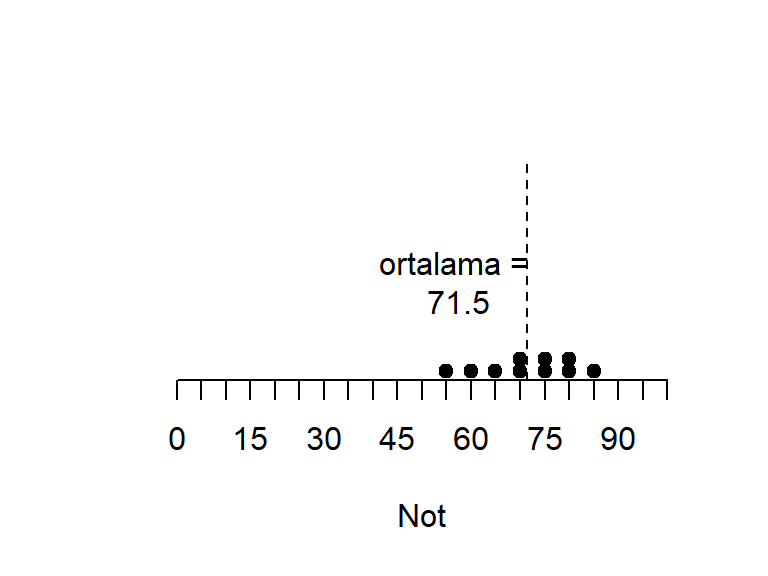
(a) Ortalama (0 hariç)
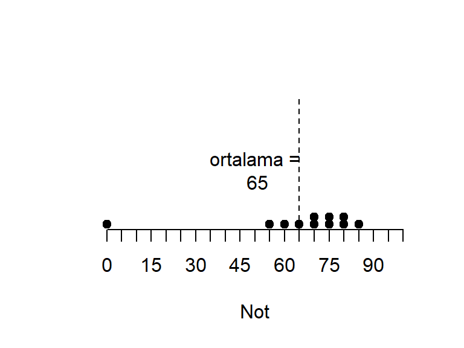
(b) Ortalama (0 dahil)
Şekil 1: Merkezi eğilim: Ortalama
Şekil 1 (a), notu 0 olan gözlem hariç tutulduğunda ortalamanın 71.5 olduğunu göstermektedir. Bu durumda, öğrencilerin çoğunluğunun aldığı puanlar 60-80 aralığındadır ve ortalama bu merkezi yansıtmaktadır. Şekil 1 (b) ise 0 puanının dahil edildiği durumu göstermektdir. Bu durumda uç değer ortalamayı aşağıya çekmiştir ve 65 olmuştur. Görüldüğü gibi sadece bir adet uç değer (0 puanı) bile ortalamanın ciddi şekilde düşmesine neden olmuştur.
Örnek 3 Hane anakütlesinden 200 gözlemlik bir rassal örneklem çekelim ve örneklem ortalamalarını hesaplayalım:
set.seed(468) # replikasyon için ind <-sample(1:N, # 1,2,...,N tamsayı vektörüsize =200, # çekilecek örneklem büyüklüğüreplace =FALSE# yerine koymadan çek )head(ind)
[1] 9793 8772 7081 5267 3628 7585
sample() fonksiyonunu kullanarak 1-10000 arasındaki tamsayı kümesinden tesadüfi olarak 200 tanesini yerine koymadan çektik ve ind nümerik (tamsayı) vektörünü oluşturduk. Daha sonra bu gözlemlere karşılık gelen satırları seçerek örneğimizi oluşturacağız:
n <-nrow(ornek1)ort_kisi <-mean(ornek1$hane_kisi_sayisi)ort_gelir <-mean(ornek1$aylik_gelir)ort_harcama <-mean(ornek1$aylik_harcama)orneklem_ort <-cbind(n, ort_kisi, ort_gelir, ort_harcama)print(orneklem_ort)
n ort_kisi ort_gelir ort_harcama
[1,] 200 3.59 3668.868 3333.335
200 haneden oluşan bu rassal örneklemdeki ortalama hane büyüklüğü 3.59, ortalama aylık gelir yaklaşık 3669 TL, ve ortalama aylık harcama yaklaşık 3333 TL’dir.
Medyan
Medyan, veriler küçükten büyüğe sıralandığında tam ortada yer alan değerdir. Eğer veri setinde çift sayıda gözlem varsa, ortadaki iki değerin ortalaması alınır.
Örnek 4 GPA verisi için medyanı hesaplayalım. Burada gözlem sayısı \(n=10\) olduğu için sıralanmış verilerde \(n/2\) ile \(n/2 +1\) pozisyonundaki değerlerin ortalamasıdır:
5 ve 6 pozisyonundaki değerlerin ortalaması \((2.9+3.1)/2=3\) medyanı verir. R programında median() fonksiyonu ile:
median(gpa)
[1] 3
bulunabilir.
Gözlem sayısı, \(n\), tek sayı olduğunda sıralanmış veride tam ortadaki değer medyanı verir. Veri kümesine bir gözlem daha ekleyelim ve medyanı hesaplayalım.
\(n=11\) olduğuna göre \((n+1)/2=6\) pozisyonundaki değer medyandır. Buna göre medyan 2.9 olur.
median(gpa2)
[1] 2.9
Medyan ortalamaya kıyasla uç değerlere daha az duyarlıdır (bkz. Şekil 2).
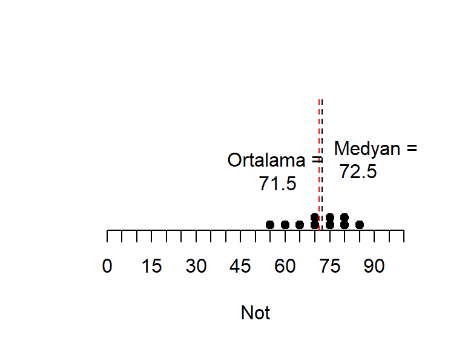
(a) Medyan (sıfırlar hariç)
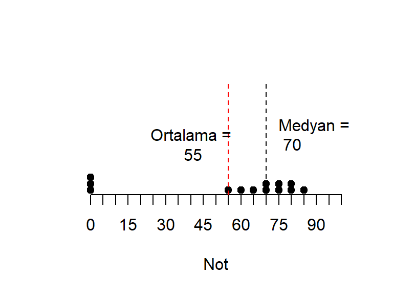
(b) Medyan (sıfırlar dahil)
Şekil 2: Merkezi eğilim: Medyan
Şekil 2 (a) öğrencilerin bir dersten aldıkları notların nokta grafiğini (her nokta bir öğrenciyi temsil etmektedir) ve merkeze ilişkin ölçüleri göstermektedir. Bu verilerde medyan 72.5 olarak hesaplanmıştır. Ortalamanın ise 71.5 olduğunu görüyoruz. Medyanın ve ortalamanın birbirine oldukça yakın olduğunu ve merkezi iyi yansıttılarını söyleyebiliriz.
Şekil 2 (b) ise 0 değerini alan üç gözlemin dahil edildiği grafiği göstermektedir. Ortalamanın ciddi şekilde düşerek 55 olduğunu, medyanın ise 70’e gerilediğini görüyoruz. Burada ilginç olan nokta, uç değerlerin ortalamayı büyük ölçüde düşürmesine rağmen medyanın daha stabil kalmasıdır. Medyan, uç değerlere karşı daha dirençlidir çünkü veri setinin ortadaki değerine bakar, aşırı küçük veya aşırı büyük değerlerden etkilenmez.
Örnek 5 Hanehalkı anakütlesi ve örneklemde hane kişi sayısı, aylık gelir ve aylık harcama için medyanları hesaplayalım.
Hem anakütlede hem de örneklemde medyan hane büyüklüğü 3 kişidir. Aylık gelir ve harcama değişkenlerinin örneklem medyanları anakütle medyanlarından biraz daha yüksektir.
Mod (En sık değer)
Bir veri kümesinin modu en çok tekrar eden değer ya da değerler olarak tanımlanır. Verilerde mod olmayabilir ya da birden fazla olabilir.
Örnek 6 Aşağıdaki veri kümesinin modunu bulalım. R table() fonksiyonunu kullanarak her bir değerin kaç kere tekrar ettiğini görebiliriz:
Bu faktör değişkeninin sıklık tablosunu oluşturalım.
table(ornek1$saglik_merkezi_erisim_faktor)
Çok kolay Kolay Orta Zor Çok zor
22 102 27 35 14
Bu tablodan da görüleceği gibi en sık cevap “Kolay”’dır (bkz. Şekil 4).
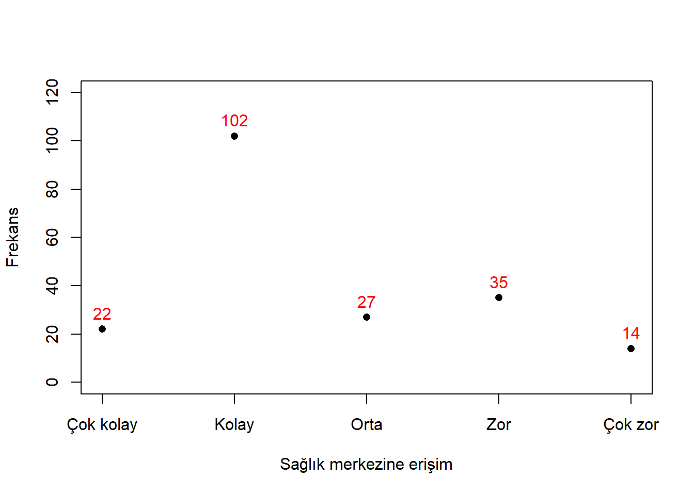
Şekil 4: En sık değer: sağlık merkezine erişimin kolaylığı
Yazdığımız fonksiyonu kullanarak da modu bulabiliriz:
mod(ornek1$saglik_merkezi_erisim)
[1] 2
mod(ornek1$saglik_merkezi_erisim_olcek)
[1] "Kolay"
Sıralı nominal (ordinal) değişkenler için mod ve medyan genellikle anlamlı bir bilgi içerir. Yukarıdaki sonuçlardan hareketle hanenin bulunduğu yerden sağlık merkezine erişimin zorluğuna ilişkin en çok verilen cevap “Kolay”’dır. Ancak nominal ve ordinal değişkenlerin nümerik temsilleri üzerinden ortalamaları yorumlarken dikkatli olmak gerekir. Özellikle sıralama aralıklarının eşit olmadığı durumlarda ortalamanın yanı sıra medyan ve modun kullanılması tercih edilebilir.
Örnek 10 Eğitim düzeyine ilişkin 6 gözlemli bir karakter vektörü verilmiş olsun:
egitim_seviyesi en son kazanılan diploma bilgisini içeren bir faktör değişkenidir:
egitim_seviyesi
[1] İlkokul Lise Üniversite Lise Lise Üniversite
Levels: İlkokul < Lise < Üniversite
Faktör değişkeni sayısal değere dönüştürüldüğünde eğitim düzeyinin sırasını yansıtacak şekilde ilkokul için 1, lise için 2, üniversite için 3 değerini almaktadır.
Ortadaki ve en sık rastlanan eğitim düzeyi “2” ya da “Lise”’dir.
Geometrik ortalama
Geometrik ortalama büyüme ve getiri oranları veya yüzdeleri hesaplamak için uygun bir ölçüdür. Aritmetik ortalamanın yanı sıra, özellikle büyüme oranlarının ortalamasını hesaplamada daha doğru sonuçlar verebilir. Geometrik ortalama gözlem değerlerinin çarpımının \(n\)-kökü olarak tanımlanır:
\[
\bar{x}_g = \sqrt[n]{x_1\cdot x_2\cdot \ldots\cdot x_n}=\left(x_1\cdot x_2\cdot \ldots\cdot x_n \right)^{1/n}=\left( \prod_{i=1}^n x_i \right)^{1/n}
\tag{3}\] Bu formüldeki \(\prod_{i=1}^n x_i\), 1’den \(n\) kadar tüm değerlerin çarpımını gösteren çarpım işlemcisidir.
Özellikle finansta getiri oranlarının geometrik ortalaması daha doğru bir şekilde ortalama davranışı yansıtabilir. \(g_i\) getiri oranı ise, geometrik ortalama \[
\bar{x}_g = \left( \prod_{i=1}^n (1+g_i) \right)^{1/n} -1
\tag{4}\] olarak tanımlanır.
Örnek 11 Bir yatırımcı 1000 TL’lik anaparayı bir finansal varlığa yatırmıştır. Varlığın değeri 1. yılda 1200 TL, 2. yılda 1260 TL, 3. yılda 1134 TL, 4. yılda 1304.1 TL, ve 5. yılda 1238.9 TL olmuştur. Yıllık ortalama getiri yüzde kaçtır?
Çözüm:
Önce her yılın getirisini hesaplayalım:
yıl getirisi: \[
\frac{1200}{1000} - 1 = 0.20
\]
yıl getirisi: \[
\frac{1260}{1200} - 1 = 0.05
\]
yıl getirisi: \[
\frac{1134}{1260} - 1 = -0.10
\]
yıl getirisi: \[
\frac{1304.1}{1134} - 1 = 0.15
\]
yıl getirisi: \[
\frac{1238.9}{1304.1} - 1 = -0.05
\] Aritmetik ortalamayı hesaplarsak \[
\bar{x} = \frac{0.2+0.05-0.10+0.15-0.05}{5}=0.05
\] buluruz. Yani aritmetik ortalamaya göre varlık her yıl ortalama \(\%5\) büyümüştür. Ancak bu yanıltıcı olabilir.
Tablo 1: 1000 TL yatırımın yıllık getirileri ve dönem sonu değeri
Buna göre finansal varlık yılda ortalama yaklaşık \(\%4.38\) büyümüştür. Bu aritmetik ortalamaya göre daha düşük bir ortalama getiriye işaret etmektedir.
Tablo 1 yatırımın yıllara göre getirilerini ve dönem sonu değerini göstermektedir. Her yıl bu ortalama oranda büyürse 5 yıl sonundaki değere ulaşılmaktadır. Aritmetik ortalama ile hesapladığımızda ise daha büyük bir değere ulaşıyoruz.
Sıra İstatistikleri, Kantiller ve Yüzdelikler
Veriyi betimlemedeki en önemli araçlardan biri gözlemlerin küçükten büyüğe doğru sıralanmasıdır. Elimizde \(x_1,x_2,\ldots,x_n\) gibi bir örneklem olduğunu düşünelim. Bu değerleri artan şekilde sıralayalım: \[
x_{(1)}, x_{(2)},x_{(3)},\ldots,x_{(n)}
\] Burada sıralamada \(k\)nci konumda yer alan değer, \(x_{(k)}\), \(k\) sıra istatistiğidir. Örneğin \(x_{(1)}\) en küçük (minimum), \(x_{(n)}\) en büyük (maximum) değeri gösterir. \[
x_{(1)} = \min(x_1,x_2,\ldots,x_n)
\]\[
x_{(n)} = \max(x_1,x_2,\ldots,x_n)
\]
Bu sıralı veri kümesinden hareketle \[
x_{(1)} = 1.8,~~ x_{(2)}=2.0,~~ x_{(3)}=2.50,\ldots,~~ x_{(10)}=3.9
\] yazabiliriz.
Sıra istatistiklerini kullanarak gözlemlerin yüzde kaçının küçük olacağı değerleri bulabiliriz. Gözlemlerin yaklaşık olarak \(\%(k/n)100\) kadarı \(x_{(k)}\) değerinden küçük olacaktır. Bu istatistikler verinin değişkenliği ve yayılımı hakkında önemli bilgiler verebilir.
Tanım 3 (Kantil) Bir veri kümesini belirli sayıda eşit parçaya bölen değerlere kantil (quantile) adı verilir. Bu değerler, veri setindeki gözlemlerin belirli bir yüzdesinin altında veya üstünde kalan değerleri gösterir. Kantiller, sıra istatistikleri kullanılarak hesaplanır.
Uygulamada genellikle gözlemleri ikiye, dörde, ona ya da yüze bölen kantil değerleri kullanılır.
Tanım 4 (Kartil (Çeyreklik, Dördebölen, Quartile)) Çeyreklikler, kantillerin özel bir durumudur ve gözlemleri dört eşit parçaya böler:
Birinci Çeyrek (\(Q_1\)): Gözlemlerin %25’inin altında kaldığı değeri gösterir.
İkinci Çeyrek (\(Q_2\)) veya Medyan: Gözlemlerin %50’sinin altında kaldığı değeri gösterir (medyan).
Üçüncü Çeyrek (\(Q_3\)): Gözlemlerin %75’inin altında kaldığı değeri gösterir.
Bu çeyrekler, veri setinin yayılımı ve merkezi eğilimi hakkında bilgi verir. Çeyrekler, sıra istatistikleri kullanılarak hesaplanır.
Sıralanmış \(n\) gözlemli bir örneklemde, \(k = \frac{n+1}{4}=0.25(n+1)\) olmak üzere, \(j\) kartili aşağıdaki formül ile bulunabilir:
\[\begin{align*}
Q_j &= \begin{cases}
x_{(jk)} & \text{ } jk \text{ bir tamsayı ise} \\
x_{\lfloor jk \rfloor} + (jk - \lfloor jk \rfloor) \cdot (x_{\lfloor jk \rfloor + 1} - x_{\lfloor jk \rfloor}) & \text{ } jk \text{ bir tamsayı değilse}
\end{cases} \\
\end{align*}\]
Burada \(\lfloor \cdot \rfloor\) bir sayıyı aşağı yuvarlayan taban fonksiyonunudur; \(a=1.85\) ise \(\lfloor a \rfloor=1\) olur. Yani \(a\)’dan büyük olmayan en büyük tamsayı 1’dir. Benzer şekilde tavan fonksiyonu, \(\lceil \cdot \rceil\), tanımlanabilir. Tavan fonksiyonu \(a\)’dan küçük olmayan en küçük tamsayı olarak tanımlanır, bu durumda \(\lceil a \rceil=2\) olur.
Örnek 13 Örneğin 11 gözlemli bir veri kümesinde birinci kartili, \(Q_1\), hesaplamak istediğimizi düşünelim. \(k=0.25(11+1)=3\) bir tamsayı olduğu için birinci kartil \(Q_1=x_{(k)}=x_{(3)}\), yani üçüncü sıradaki gözlem olur.
Burada \(x_{(3)}=2.5\) olduğu için birinci kartil \(Q_1=2.5\) olarak bulunur.
Örnek 14 \(n=10\) gözlemli bir veri kümesinde ise \(0.25(10+1)=2.75\) bir tamsayı olmadığı için ikinci ve üçüncü sıradaki değerlerin interpolasyonu ile bulunur. Örneğin,
x <-c(1:10)*10rbind(`sıra`=1:10, `sıralı_x`=sort(x))
bulunur. 8. ve 9. sıradak gözlemlerin farkının dörtte birini 8. sıradaki gözleme ekliyoruz.
R’da kantillerin ve çeyrekliklerin hesaplanmasında quantile() fonksiyonu kullanılabilir. Bu fonksiyon kantillerin hesaplanmasında farklı algoritmalar kullanır. Kullanıcılar type girdisini seçerek istedikleri algoritmaya göre kantilleri hesaplayabilirler. Bu algoritmalar interpolasyonun türüne göre farklılaşmaktadır. R’ın varsayılan algoritması Hyndman ve Fan yöntemini (type = 7) kullanmaktadır:
quantile(x, probs =c(0.25, 0.5, 0.75), type =7)
25% 50% 75%
32.5 55.0 77.5
Bu algoritma ile bulunan kartiller biraz farklıdır. Yukarıda açıkladığımız yöntemi uygulamak için type=6 opsiyonu kullanılabilir:
quantile(x, probs =c(0.25, 0.5, 0.75), type =6)
25% 50% 75%
27.5 55.0 82.5
Küçük veri kümelerinde farklılık gösterse de bu algoritmalar daha büyük verilerde birbirine yaklaşık sonuçlar verir.
Örnek 15 Hanehalkı örnekleminde aylık gelirin kartillerini bulalım.
load("Data/hane_ornek.RData")# type=7quantile(hane_ornek$aylik_gelir, probs =c(0.25, 0.5, 0.75), type =7)
25% 50% 75%
1883.234 2863.117 4529.665
# type=6quantile(hane_ornek$aylik_gelir, probs =c(0.25, 0.5, 0.75), type =6)
25% 50% 75%
1883.143 2863.117 4531.803
Her iki yöntem birbirine benzer sonuçlar vermiştir. Buna göre hanehalklarının %25’inin aylık geliri 1883 TL’den, %50’sinin 2863 TL’den, ve %75’inin 4530 TL’den düşüktür.
Tanım 5 (Yüzdelik) Yüzdelikler (percentile), kantillerin bir başka özel durumudur ve veri kümesini yüzdelik dilimlere böler. Örneğin, 90. yüzdelik dilim, veri setindeki gözlemlerin %90’ının bu değerin altında olduğunu belirtir.
Genel olarak \(p\) yüzdeliği gözlemlerin yaklaşık %\(p\) kadarının küçük olduğu değere eşittir. Sıralanmış bir veri kümesinde \((n+1)p/100\) pozisyonundaki değer olarak bulunabilir. Benzer şekilde ondalıklar (decile) da tanımlanabilir.
Örnek 16 R’da yüzdelikleri hesaplamak için quantile() fonksiyonu kullanılabilir:
# R ile kantil hesabı quantile(hane_ornek$yillik_gelir, probs =c(0.1, 0.25, 0.9))
10% 25% 90%
15583.23 22598.81 81032.53
Buna göre hanelerin %10’unun yıllık geliri 15583.23 TL’den düşüktür. Benzer şekilde 22598.81 TL’den daha az yıllık geliri olan hanelerin oranı %25’dir. Hanelerin %90’ının geliri 81032.53 TL’den düşüktür.
Örnek 17 hane_ornek veri kümesinde yer alan aylik_harcama değişkeninin histogramını ve yoğunluk fonksiyonunu çiziniz. Özet istatistiklerle birlikte yorumlayınız. Ayrıca, 0.1, 0.90, 0.95 ve 0.98 yüzdelik değerlerini hesaplayınız ve yorumlayınız.
breaks=100 ile histogramı ve yoğunluk fonksiyonunu çizelim. X ekseninin sınırlarını (0, 15000) olarak belirleyelim.
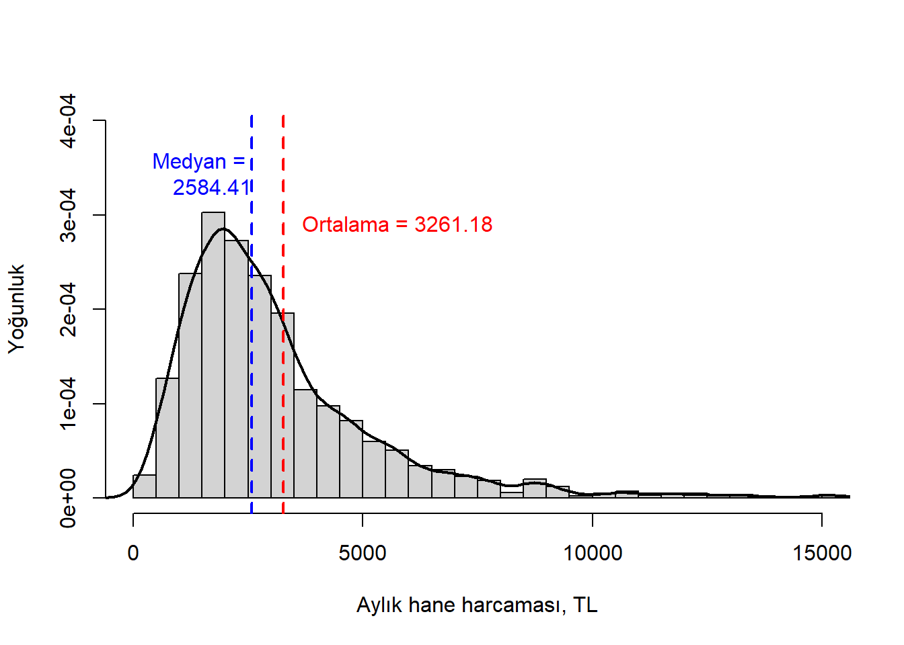
Şekil 5: Hanehalkı harcama dağılımı
Özet istatistikler:
summary(hane_ornek$aylik_harcama)
Min. 1st Qu. Median Mean 3rd Qu. Max.
215 1708 2584 3261 3948 58994
Histogram ve yoğunluk grafiğinden de görüleceği gibi (bkz. Şekil 5) aylık hane harcamaları sağa çarpık bir dağılıma sahiptir. Örneklem ortalaması (3261 TL) medyan hane harcamasından (2584 TL) daha büyüktür. Hanelerinin yaklaşık % 75’inin aylık harcaması 3948 TL’den küçüktür.
Hanelerin % 10’u aylık yaklaşık 1108 TL’den daha az harcamaktadır. Dağılımın diğer ucunda, hanelerin % 5’i 7802 TL’den daha fazla, % 2’si ise 10869 TL’den daha fazla harcamaktadır.
Değişkenlik Ölçüleri
Bir veri kümesindeki merkezi eğilimin yanı sıra, değerlerin ne kadar yayıldığını ya da birbirinden ne kadar farklı olduğunu belirlemek, verilerin doğasını anlamak için önemlidir. Değişkenlik ölçüleri, bu yayılımı ölçmek ve verilerin dağılımı hakkında bilgi sahibi olmak için kullanılır.
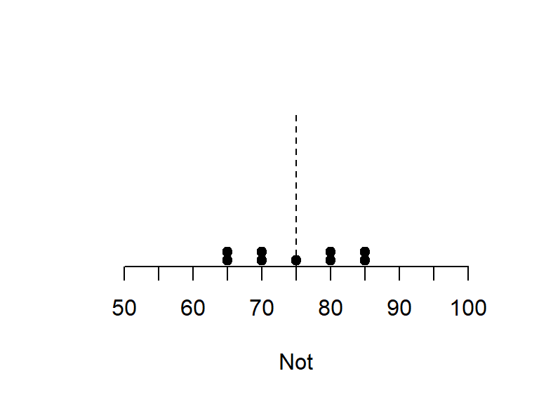
(a) Birinci sınav sonucu, ortalama = 75
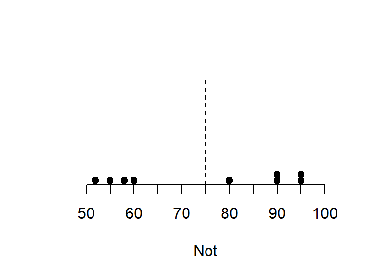
(b) İkinci sınav sonucu, ortalama = 75
Şekil 6: Ortalaması aynı değişkenliği farklı iki veri kümesi
Şekil 6 iki sınav sonucuna ilişkin notları göstermektedir. Her iki sınavın ortalaması 75’dir. Birinci sınavın notları ortalama çevresinde daha dar bir aralıkta dağılmaktadır. İkinci sınavın sonuçları ise daha geniş bir aralıkta değerler almaktadır.
Aralık
Aralık (range), verideki en büyük ve en küçük değer arasındaki farktır. Sıralanmış gözlemlerde \[
\mbox{Aralık} = x_{(n)} - x_{(1)}
\] formülüyle kolayca bulunabilir. Şekil 6 verilerine göre birinci sınavın aralığı \(85-65=20\), ikinci sınavın aralığı ise \(95-52=43\) olarak bulunur. Ortalaması aynı olan bu veri kümelerinde aralığı daha geniş olan daha yüksek değişkenliğe sahiptir diyebiliriz.
Aralık ölçüsü değerlerin genel dağılımı hakkında bir fikir verse de tek başına çok kısıtlı bir bilgi sağlar. Özellikle uç değerlerin varlığı aralığı doğrudan etkiler. Örneğin notları 0 ve 100 olan iki öğrenci olsaydı aralık 100 olurdu. Uç değerlere fazla duyarlı olduğu için aralık yerine dağılımın yüzde ellilik orta kısmındaki değerler aralığına bakmak isteyebiliriz. Buna kartiller aralığı denir.
Kartiller Aralığı
Kartiller, daha önce tanımladığımız gibi, gözlemlerin dört eşit parçaya bölündüğü noktalardır. Veriler küçükten büyüğe sıralandığında, ilk, ikinci (medyan), ve üçüncü kartiller hesaplanır. Kartiller aralığı üçüncü kartil ile birinci kartil arasındaki fark olarak tanımlanır:
\[
IQR = Q_3-Q_1
\tag{5}\] Burada \(Q_3\) gözlemlerin %75’inin küçük olduğu üçüncü kartil değerini, \(Q_1\) ise %25’inin küçük olduğu birinci kartil değerini göstermektedir.
Örnek 18 13 öğrencinin not verisi aşağıdaki gibidir.
Buna göre medyan (\(Q_2\)) yedinci sıradaki değerdir: 66. Birinci ve üçüncü kartiller ise
kartiller <-quantile(not, probs =c(0.25, 0.5, 0.75), type =6)kartiller
25% 50% 75%
56.5 66.0 82.5
\(Q_1=56.5\) ve \(Q_3=82.5\) olarak bulunur. Öğrencilerin %25’i 56.5’den, %75’i 82.5’den düşük not almıştır. Bu ikisi arasındaki fark
IQR <- kartiller[3]-kartiller[1]IQR
75%
26
kartiller aralığıdır, \(IQR=26\). Bu dağılımın ortasında yer alan gözlemlerin aralığı olarak düşünülebilir. Özellikle uç değerlerin varlığı durumunda aralık yerine dördebölenler aralığı tercih edilebilir.
Kutu çizimi
Kutu ya da kutu-bıyık (box-whiskers) çizimi olarak da isimlendirilen bu grafik verinin dağılımı hakkında bilgi verir ve beş-sayı özetinden hareketle oluşturulur. Beş-sayı özeti aşağıdaki bileşenlerden oluşur:
Minimum: Verideki en küçük değer, \(x_{(1)}\) sıra istatistiği.
Birinci Çeyrek (Q1): Verinin %25’inin altında kalan değeri gösterir (birinci kartil).
Medyan (Q2): Verinin ortasındaki değeri temsil eder. Verinin %50’si bu değerin altındadır (ikinci kartil).
Üçüncü Çeyrek (Q3): Verinin %75’inin altında kalan değeri gösterir (üçüncü kartil).
Maksimum: Verideki en büyük değer.
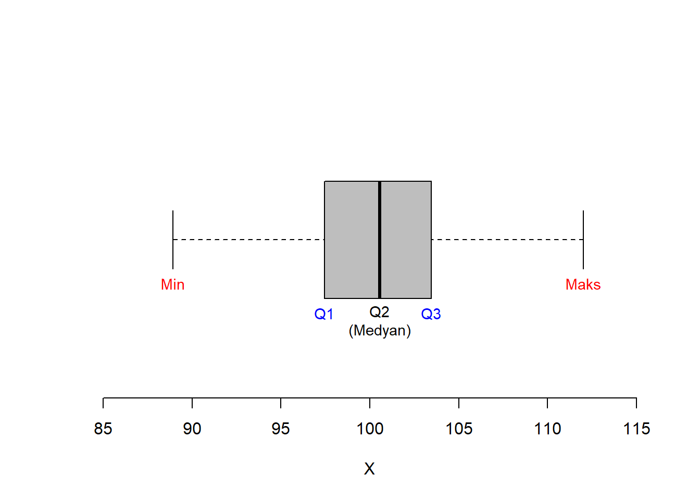
Şekil 7: Kutu grafiği (uç değerlerin olmadığı durum)
Şekil 7 uç değerlerin (outlier) olmadığı durum için örnek bir kutu çizimini göstermektedir. Bu grafiğin bileşenleri şunlardır:
Kutu: Q1 ve Q3 arasında yer alır ve verinin ortanca %50’sini içerir. Kutunun içinde yer alan çizgi (dikey ya da yatay olabilir) medyanı gösterir. Buradan hareketle merkezi aralığı (IQR) kolayca değerlendirebiliriz.
Bıyıklar (Whiskers): Kutunun her iki ucundan minimum ve maksimum değerlere kadar uzanır. Eğer tüm gözlem değerleri \(1.5\times IQR\) aralığı içindeyse alt ve üst bıyık noktaları aynı zamanda minimum ve maksimum değerlerdir. Ancak bu aralığın dışında değerler varsa bunlar ayrıca gösterilir.
Uç (aşırı) Değerler (Outliers): Q1-1.5IQR’den küçük veya Q3+1.5IQR’den büyük olan değerlerdir. Bunlar kutu ve bıyıkların dışında tekil noktalar olarak gösterilir. Örneğin Şekil 8 alt ve üst uç değerlerin olduğu bir veri kümesine ilişkin kutu çizimini göstermektedir. Bu grafikte alt ve üst bıyık ötesindeki noktalar uç değerleri göstermektedir.
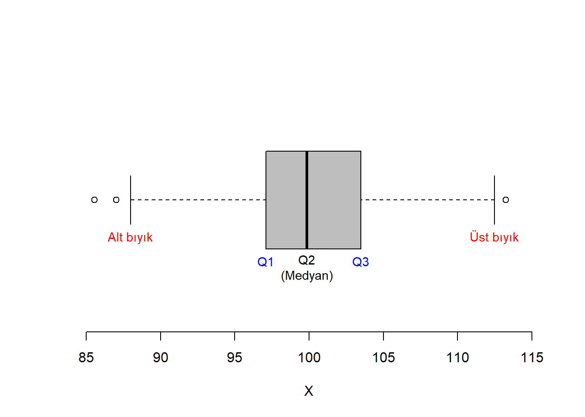
Şekil 8: Kutu grafiği (uç değerlerin olduğu durum)
R’da kutu çizimi için boxplot() fonksiyonu kullanılabilir (bkz. Şekil 9):
Mutluluk endeksinin kutu grafiğini 5-sayı özeti ile birlikte yorumlayabiliriz.
# min Q1 median Q3 maxfivenum(mutluluk$mutluluk)
[1] 41.98 56.54 60.39 65.57 77.66
summary(mutluluk$mutluluk)
Min. 1st Qu. Median Mean 3rd Qu. Max.
41.98 56.54 60.39 61.15 65.57 77.66
Buna göre minimum mutluluk düzeyi yaklaşık olarak 42, ilk kartil 56.54, medyan 60.39, üçüncü kartil yaklaşık 66 ve maksimum mutluluk yaklaşık 78’dir. Medyan ve ortalamanın birbirine yakın olması mutluluğun yaklaşık olarak simetrik dağıldığına işaret etmektedir. Kutu çiziminde medyan çizgisinin kartiller aralığın gösteren dikdörtgeni yaklaşık iki eşit parçaya ayırdığına dikkat ediniz.
Varyans
Varyans bir veri kümesinde merkez çevresindeki değişkenliğin bir ölçüsüdür. Verilerin anakütleye ya da örnekleme ait olmasına göre farklı şekilde tanımlanır. Örneklem ya da anakütle varyansını hesaplamanın ilk adımı her bir gözlem değerinin ortalamaya olan uzaklığının hesaplanmasıdır.
Ortalaması \(\mu=\sum_i X_i/N\) olan bir anakütlede gözlem değerlerini \((X_1, X_2,\ldots,X_N)\) ile gösterelim. Tipik elemanı \(X_i\) olan bu gözlem kümesinde her bir değerin anakütle ortalaması ile farkını, \(X_i-\mu\), hesaplayabiliriz. Böylece her bir gözlemin \[
(X_1-\mu),(X_2-\mu),(X_3-\mu),\ldots,(X_n-\mu)
\] merkeze olan uzaklığını bulabiliriz. Fark pozitif işaretliyse bu gözlemin ortalamanın üzerinde, negatif işaretliyse ortalamanın altında olduğunu gösterir. Mutlak büyüklüğü ise uzaklığa ilişkin bilgi içerir.
Bu farklardan hareketle bir değişkenlik ölçütü oluşturabilir miyiz? Ortalamadan farkların toplamını aldığımızı düşünelim:
Burada \(X_i\)’lerin toplamının tanım gereği \(N\mu\) olduğuna dikkat ediniz. Bu farkların toplamı, gözlem kümesi ne olursa olsun 0 olduğu için bir değişkenlik ölçütü olamaz.
Ortalamadan büyük ve küçük olan gözlemlere eşit ağırlık veren bir değişkenlik ölçütü geliştirmenin bir yolu bu farkların karesini almaktır: \[
(X_1-\mu)^2,(X_2-\mu)^2,(X_3-\mu)^2,\ldots,(X_n-\mu)^2
\] Ortalamadan uzaklığın karelerinin toplamından hareketle bir değişkenlik ölçütü oluşturabiliriz. Buna varyans adı verilir.
Genellikle \(\sigma^2\) ile gösterilir ve sigma-kare şeklinde okunur. Varyans hiç bir zaman negatif olamaz. Tüm gözlemler aynı değere eşitse, yani sabit gözlemler için varyans 0 olur.
Aşağıda verilen kısa yol formülüyle ortalamadan farkları almadan da varyansı hesaplayabiliriz:
Örnek 19 \(X\) değişkeninin anakütle değerleri \((65,70,75,80,85,80,85,65,70)\) olsun. Anakütle ortalaması \(\mu = 75\) olmak üzere Tablo 2 varyans hesaplaması için gerekli büyüklükleri göstermektedir.
Tablo 2: \(N=9\) gözlemli bir anakütle için varyans hesaplama tablosu
\(i\)
\(X_i\)
\(X_i - \mu\)
\((X_i - \mu)^2\)
\(X_i^2\)
1
65
-10
100
4225
2
70
-5
25
4900
3
75
0
0
5625
4
80
5
25
6400
5
85
10
100
7225
6
80
5
25
6400
7
85
10
100
7225
8
65
-10
100
4225
9
70
-5
25
4900
Toplam
675
0
500
51125
Bu tablodan hareketle anakütle varyansı \[
\sigma^2 =\frac{1}{N}\sum_{i=1}^N (X_i-\mu)^2 = 500/9=55.56
\] olarak bulunur. Kısa yol formülünü kullanarak \[
\sigma^2 = \frac{1}{N}\sum_{i=1}^N X_i^2-\mu^2 = 51125/9 - 75^2 = 55.56
\] aynı sonuca ulaşılabilir.
Benzer şekilde, örneklem varyansı gözlemlerin örneklem ortalamasından farkının kareler toplamına dayanır. Elimizde bir örneklem olduğu için anakütle ortalamasını \(\mu\) bilmeyiz. Bu nedenle varyans formülünde \(\mu\) için iyi bir tahminci kullanmamız gerekir. Anakütle ortalamasının yansız bir tahmincisi örneklem ortalamasıdır. Böylece ölçütümüzü her bir örneklem değerinin aritmetik ortalamaya olan uzaklığının karesine dayandırabiliriz.
\(n\) gözlemli bir örneklemi \((x_1, x_2,\ldots,x_n)\) ile gösterelim. Örneklem ortalaması \(\bar{x}=\sum_i X_i/n\) olsun. Tipik elemanı \(x_i\) olan bu gözlem kümesinde her bir değerin örneklem ortalaması ile farkını, \(x_i-\bar{x}\), hesaplayabiliriz. Böylece her bir gözlemin \[
(x_1-\bar{x}),(x_2-\bar{x}),(x_3-\bar{x}),\ldots,(x_n-\bar{x})
\] örneklem ortalamasına ne kadar uzak olduğunu bulabiliriz. Anakütle ortalamasından farkların toplamının 0 olduğunu göstermiştik. Örneklem ortalamasından farkların toplamının da 0 olduğu kolayca gösterilebilir:
\[\begin{align}
\nonumber \sum_{i=1}^n (x_i-\bar{x})&= (x_1-\bar{x})+(x_2-\bar{x})+(x_3-\bar{x})+\ldots +(x_n-\bar{x})\\
&= (x_1+x_2+x_3+\ldots+x_N)-n \bar{x}\\
\nonumber &= n \bar{x} - n \bar{x}\\
\nonumber &= 0
\end{align}\]
Tanım 7 (Örneklem varyansı, \(s^2\)) \(n\) gözlemli bir veri kümesi için örneklem varyansı \[
s^2 =\frac{1}{n-1}\sum_{i=1}^N (x_i-\bar{x})^2
\tag{7}\] olarak tanımlanır. Burada fark karelerinin toplamının gözlem sayısına değil, \(n-1\)’e bölündüğüne dikkat ediniz. Daha sonra detalı olarak inceleyeceğimiz gibi, örneklem varyansı, \(s^2\), bilinmeyen anakütle varyansının sapmasız/yansız bir tahmincisidir.
Örneklem varyansının kısa yol formülü aşağıda türetilmiştir:
olur. Örneklem varyansı var() fonksiyonu ile de bulunabilir:
var(harcama)
[1] 1115000
Varyans (örneklem ya da anakütle) sadece negatif olmayan değerler alır, yani ya 0 olur ya da pozitif değerler alır. Varyansın 0 olması verilerde değişkenlik olmadığı anlamına gelir (sabit değerlerden oluşur). Diğer taraftan varyansın mutlak yorumu karelerinin alınmasından dolayı zordur. Verilerin ölçü birimi cinsinden yorumu kolaylaştırmak için standart sapma kullanılabilir.
Standart Sapma
Harcama verisinde ortalama 3750 TL’ye karşılık varyans 1115000 olarak bulunmuştu. Bu değeri nasıl yorumlayabiliriz? Varyansın tanımında ortalamaya uzaklığın karesini aldığımız için değişkenin ölçü birimi ile yorum yapamayız. Orijinal ölçü birimine dönmek için varyansın karekökünü alabiliriz. Böylece hanelerin aylık harcaması 3750 TL ve standart sapması 1056 TL’dir diyebiliriz.
Tanım 8 (Anakütle standart sapması, \(\sigma\)) Anakütle standart sapması, anakütle varyansının (pozitif) kareköküdür:
Tanım 9 (Örneklem standard sapması, \(s\)) Örneklem standart sapması, örneklem varyansının (pozitif) kareköküdür:
\[
s = \sqrt{s^2} =\sqrt{\frac{1}{n-1}\sum_{i=1}^n (x_i-\bar{x})^2}
\tag{9}\]
Standart sapma verilerin yayılımını daha kolay yorumlamak için kullanılabilir. Daha düşük bir standart sapma, verilerin ortalamaya daha yakın dağıldığını, yüksek bir standart sapma ise verilerin daha geniş bir aralıkta yayıldığını gösterir.
Chebyshev Teoremi
Anakütle standart sapmasını yorumlamanın bir yolu, verilerin ne kadarının ortalamadan kaç standart sapma uzağında olduğunun bulunmasıdır. Chebyshev teoremi ya da kuralı bunun için her anakütle için geçerli bir yol sunar.
Teorem 1 (Chebyshev) Ortalaması \(\mu\) ve standart sapması \(\sigma\) olan bir anakütlede, \(k>1\) olmak üzere, verilerin en az \[
\% ~\left( 1-\frac{1}{k^2} \right)\times100
\tag{10}\] kadarı ortalamadan en çok \(k\) standart sapma uzaklıktadır.
Örneğin, \(k=2\) ise, verilerin \(\%~100(1-1/4)=\% ~75\) kadarı 2 standart sapma içinde yer alır. Alt sınırı \(\mu-2\sigma\) ve üst sınırı \(\mu+2\sigma\) olan bir aralık belirlersek verilerin yaklaşık %75’i bu aralık içinde yer alacaktır.
Benzer şekilde \(k=3\) ise verilerin %\(100(1-1/9)\) yani % 88.89 kadarı 3 standart sapma içinde yer alır.
Chebyshev teoreminin bu versiyonu simetrik olsun olmasın her dağılım için geçerlidir. Simetrik dağılımlar için daha spesifik bir aralık belirlenebilir.
Teorem 2 (Chebyshev (Normal dağılım)) Çan biçimli simetrik dağılmış bir anakütle için verilerin yaklaşık
\(\%68\)’i ortalamadan \(1\) standart sapma uzaklıkta, yani \(\mu \pm\sigma\) aralığı içinde,
\(\%95\)’i ortalamadan \(2\) standart sapma uzaklıkta, yani \(\mu \pm 2\sigma\) aralığı içinde, ve
\(\%99.7\)’si ortalamadan \(3\) standart sapma uzaklıkta, yani \(\mu \pm 3\sigma\) aralığı içinde
yer alır.
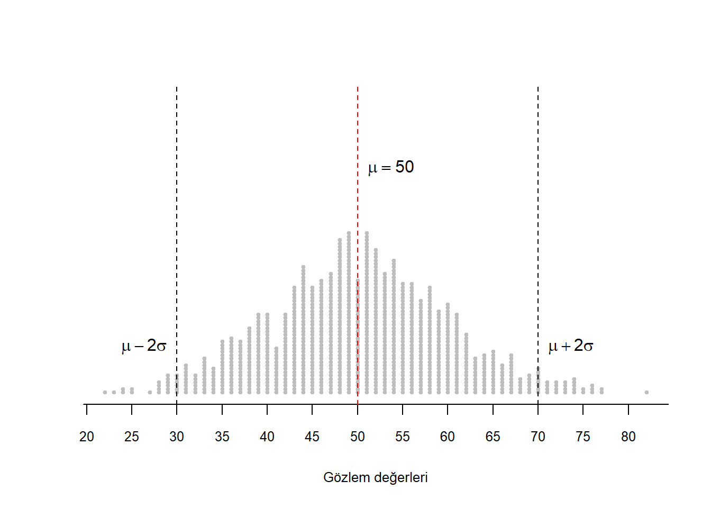
Şekil 10: Chebyshev teoreminin simetrik dağılım versiyonu: gözlemlerin %95’i 2 standart sapma içinde yer alır
Örnek 21 Ortalaması \(\mu=50\) ve varyansı \(\sigma^2=100\) olan normal dağılmış bir anakütlede gözlemlerin %95’i \(\mu-2\sigma=30\) ve \(\mu+2\sigma=70\) aralığı içinde yer alır. Şekil 10 bu aralığı göstermektedir. Gözlemlerin %68’i bir standart sapma içinde, yani, 40-60 aralığında değerler almaktadır. Gözlemlerin neredeyse tamamı 3 standart sapma içindedir (20-80).
Örnek 22 Türkiye’de il düzeyinde 2013 yılı mutluluk verilerini anakütle olarak düşünelim:
ortalama varyans stdsapma
61.15284 56.74699 7.53306
Dağılım hakkında ek bir bilgimiz olmadığını varsayalım. Buna göre mutluluk düzeyi ortalaması 61 ve standart sapması 7.5 olan bir dağılıma sahiptir. Buradan hareketle gözlemlerin yaklaşık %75’inin 46 ile 76 arasında değerler aldığını söyleyebiliriz. Simetrik bir dağılıma sahipse verilerin %95’i bu aralıkta yer alacaktır.
Değişkenlik Katsayısı
Değişkenlik katsayısı (coefficient of variation, CV) verideki değişkenliğin ortalamaya göre ne kadar büyük olduğunu gösteren istatistiksel bir ölçüttür. Varyasyon ya da değişkenlik katsayısı, standart sapmanın, ortalamaya oranının yüzdesi olarak hesaplanır ve genellikle yüzde ile ifade edilir. Bu katsayı, birimlerden bağımsız olduğu için farklı birimlere sahip verileri karşılaştırmak için uygundur.
Tanım 10 (Anakütle değişkenlik katsayısı) Anakütle standart sapmasının anakütle ortalamasına oranı olarak \[
CV = \%100\cdot \frac{\sigma}{\mu}
\tag{11}\] tanımlanır.
Tanım 11 (Örneklem değişkenlik katsayısı) Örneklem standart sapmasının örneklem ortalamasına oranı olarak \[
\widehat{CV} = \%100\cdot \frac{s}{\bar{x}}
\tag{12}\] tanımlanır.
Görece yüksek bir CV gözlemlerin ortalama göre daha fazla değişkenliğe sahip olduğunu gösterir. Veriler daha yayıktır.
Örnek 23 Bir grup öğrencinin iki sınava ait sonuçları şöyledir: \[
\mbox{1. Sınav:}\quad \bar{x}=74,\quad s=8
\]\[
\mbox{2. Sınav:}\quad \bar{x}=52,\quad s=15
\] Örneklem değişkenlik katsayılarını bulun ve yorumlayın.
Çözüm: \[
\mbox{1. Sınav:}\quad \widehat{CV} = \%100\cdot \frac{s}{\bar{x}}=\%100\cdot \frac{8}{74}=\%10.81
\]\[
\mbox{2. Sınav:}\quad \widehat{CV} = \%100\cdot \frac{s}{\bar{x}}=\%100\cdot \frac{15}{52}=\% 28.85
\] Buna göre 2. sınavın varyasyon katsayısı daha yüksektir. İkinci sınavda notlar ortalamaya göre daha büyük değişkenlik gösterir. Bu oranlar, standart sapmanın büyüklüğünün tek başına yeterli olmadığını vurgular. Örneğin, her iki sınavın standart sapması aynı olsaydı bile, ortalamaları farklı olduğu için değişkenlik katsayıları farklı olurdu. CV yardımıyla iki farklı sınavın performanslarını ve göreceli değişkenliklerini daha anlamlı bir şekilde kıyaslayabiliyoruz.
Biçim Ölçüleri
Verilerin dağılımının simetrikliği, uçlarda ve merkezdeki davranışları (örneğin basıklık ve kuyruk kalınlığı), görsel araçlarla birlikte analiz edildiğinde anlamlı bilgiler sağlar. Bu bölümde, dağılımın şeklini betimleyen istatistikleri inceleyeceğiz. Özellikle histogram, kutu grafiği ve yoğunluk grafikleriyle çalışırken, bu biçim ölçülerini de kullanacağız.
Çarpıklık
Çarpıklık, bir dağılımın simetrik olup olmadığı hakkında bilgi verir. Simetrik bir dağılımın sağ ve sol tarafı birbirine benzer bir şekle sahiptir. Böyle bir dağılım için medyan değeri ortalama değerine eşittir.
Örneklem çarpıklık katsayısı \[
c = \frac{m_3}{s^3} = \frac{{\frac{1}{n} \sum_{i=1}^{n} (x_i - \bar{x})^3}}{{\left( \frac{1}{n-1} \sum_{i=1}^{n} (x_i - \bar{x})^2 \right)^{3/2}}}
\tag{13}\] formülüyle hesaplanabilir. Burada \(c\) örneklem çarpıklık katsayısını, \(\bar{x}\) örneklem ortalamasını, \(s\) örneklem standart sapmasını göstermektedir. Bu istatistiğin payında yer alan ifade \(x\)’in örneklemdeki üçüncü momentidir: \(m_3\). Payda her zaman pozitif değerler alırken, pay sıfır, negatif ya da pozitif olabilir: - \(c=0\) ise dağılım simetrik, - \(c>0\) ise pozitif-çarpık ya da sağa çarpık, - \(c<0\) ise sola-çarpıktır (negatif çarpık).
Simetrik dağılımlar için \[
medyan=ortalama=mod
\] olur.
Sağa çarpık dağılımlar için \[
ortalama > medyan
\] olur. Bunun nedeni sağa çarpık dağılımlarda büyük değerlerin fazla ağırlığa sahip olmasıdır.
Sola çarpık dağılımlar için ise \[
medyan > ortalama
\] olur.
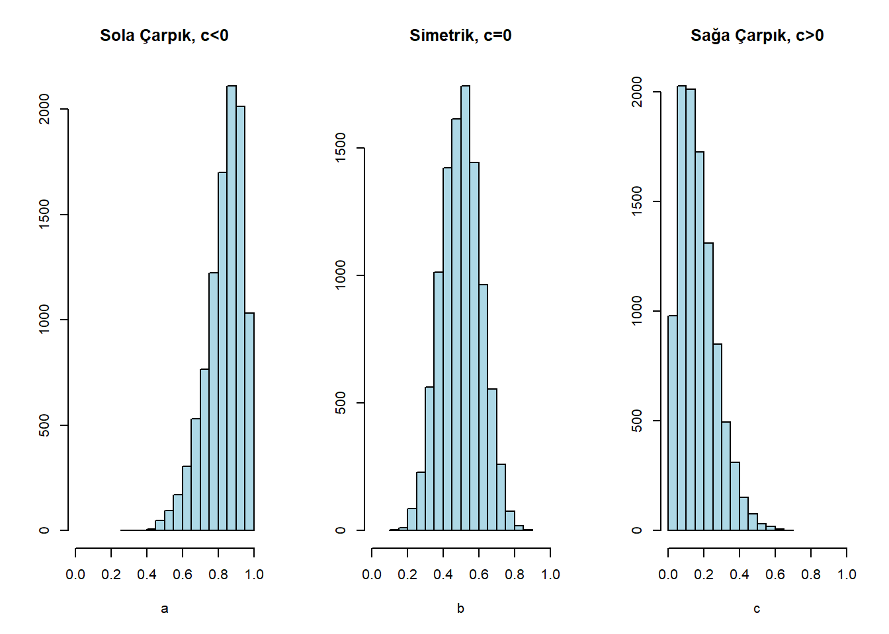
Şekil 11: Dağılımın çarpıklığı
Histogramın (dağılımın) biçimi ile çarpıklık katsayısı (\(c\)) ilişkilidir. Çarpıklık katsayısı \(c\)’nin 0 olması dağılımın simetrik olduğu duruma işaret eder (Şekil 11 (b)). Çarpıklık katsayısının pozitif olması, yani pozitif çarpıklık, dağılımın sağ kuyruğunun sola göre daha uzun olduğunu gösterir (Şekil 11 (c)). Negatif çarpıklık ise sol kuyruğun sağa göre daha uzun olduğunu ifade eder (Şekil 11 (a)).
Örnek 24 Aşağıdaki not ortalaması verisinde çarpıklık katsayısını R ile hesaplayınız.
Çarpıklık katsayısı yaklaşık \(-0.27\) olarak bulundu. Bu değer negatif olduğu için dağılımın hafif sola çarpık olduğunu söyleyebiliriz. Örneklem ortalaması (2.94) medyandan (3) biraz daha küçük bulunmuştur.
Örneklem çarpıklık katsayısını hesaplayan aşağıdaki gibi bir R fonksiyonu da yazabiliriz:
# örneklem çarpıklık katsayısı için fonksiyon# Bu fonksiyon, örneklemdeki üçüncü merkezi momenti ve standart sapmayı # kullanarak çarpıklık katsayısını hesaplarcarpiklik <-function(x) { n <-length(x) mean_x <-mean(x) sd_x <-sd(x) carpiklik <-sum((x - mean_x)^3) / (n * sd_x^3)return(carpiklik)}
Bu fonksiyonu kullanarak
carpiklik(gpa)
[1] -0.2658297
buluruz.
Örnek 25 Yukarıda yazdığımız carpiklik() fonksiyonunu kullanarak hanahalkı örneklemindeki aylık harcama değişkeninin çarpıklık katsayısını hesaplayınız. Örneklem ortalaması ve medyanını da hesaplayınız ve yorumlayınız.
carpiklik(hane_ornek$aylik_harcama)
[1] 5.98572
Aylık hane harcamasının çarpıklık katsayısı yaklaşık 5.99 olarak bulunmuştur. Bu değişken sağa çarpık bir dağılıma sahiptir. Başka bir ifadeyle hanelerin önemli bir kısmı düşük ve orta düzeydeki değerlerde yoğunlaşmıştır. Aylık harcama düzeyi arttıkça hane sayısı azalmaktadır.
Böyle bir dağılımda göreceli yüksek ve uç değerlerin varlığı ortalamanın yüksek çıkmasına neden olabilir. Bu değişken için
mean(hane_ornek$aylik_harcama)
[1] 3261.177
median(hane_ornek$aylik_harcama)
[1] 2584.41
örneklem ortalaması 3261.18 TL, örneklem medyanı ise 2584.41 TL olarak bulunmuştur. Tipik olarak ortalamanın medyandan büyük olması çarpıklığın pozitif olduğuna işaret eder. Genel olarak fertlerin ya da hanelerin gelir dağılımları sağ kuyruğun daha uzun olduğu, yani düşük ve orta gelirli gözlemlerin ağırlıkta olduğu bir davranışa sahiptir.
Çarpıklık dağılımın simetrikliğine ilişkin bilgi verir. Basıklık katsayısı ise kuyrukların (merkezden uzak değerlerin) dağılımına ilişkin bilgi içerir. Bu ölçüleri dağılım grafiklerini incelerken tekrar ele alacağız.
Basıklık
Basıklık, bir dağılımın tepesi etrafında nasıl yoğunlaştığını ve kuyrukların ne kadar uzun olduğunu belirten bir ölçüdür. Örneklem basıklık katsayısı \[
b = \frac{m_4}{s^4} = \frac{\frac{1}{n} \sum_{i=1}^{n} (x_i - \bar{x})^4}{\left(\frac{1}{n} \sum_{i=1}^{n-1} (x_i - \bar{x})^2\right)^2}
\tag{14}\] formülüyle hesaplanabilir (büyük örneklemlerde). Burada \(b\) örneklem basıklık katsayısını, \(\bar{x}\) örneklem ortalamasını, \(s\) örneklem standart sapmasını göstermektedir. Bu istatistiğin payında yer alan ifade \(x\)’in örneklemdeki dördüncü merkezi momentidir (\(m_4\)). Basıklık katsayısı her zaman pozitif değerler alır.
Basıklık katsayısı genellikle normal dağılıma göre değerlendirilir. Normal dağılım için basıklık 3 değerini alır. Eğer \(b>3\) ise dağılım normal dağılıma göre daha basıktır; yani kuyrukları daha kalındır (leptokurtosis). Tersi durumda \(b<3\) ise dağılım normale göre daha ince kuyruklara sahiptir.
Örnek 26 Basıklık katsayısını hesaplayan kurtosis_hesapla() isimli bir R fonksiyonu yazınız. bist100.rda veri kümesinde yer alan getiri değişkeni için basıklık katsayısını hesaplayınız.
# Basıklık (kurtosis) hesaplayan fonksiyonkurtosis_hesapla <-function(x) { n <-length(x) mean_x <-mean(x) m4 <-sum((x - mean_x)^4) / n s2 <-sum((x - mean_x)^2) / n kurtosis <- m4 / (s2^2)return(kurtosis)}
Basıklık katsayısı yaklaşık 8.07 olarak bulunmuştur. Bu değer 3’ten büyük olduğu için normal dağılıma göre getirinin daha kalın kuyruklara sahip olduğunu söyleyebiliriz.
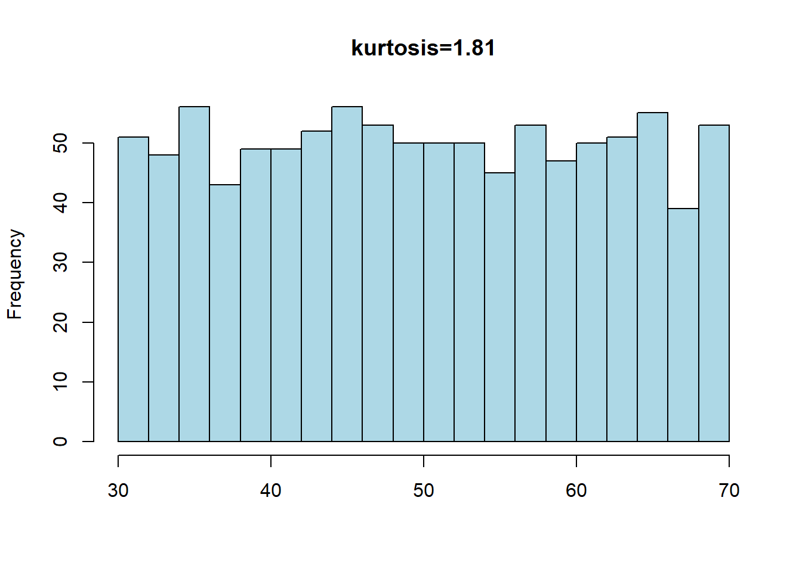
(a) Basık (platykurtic) dağılım
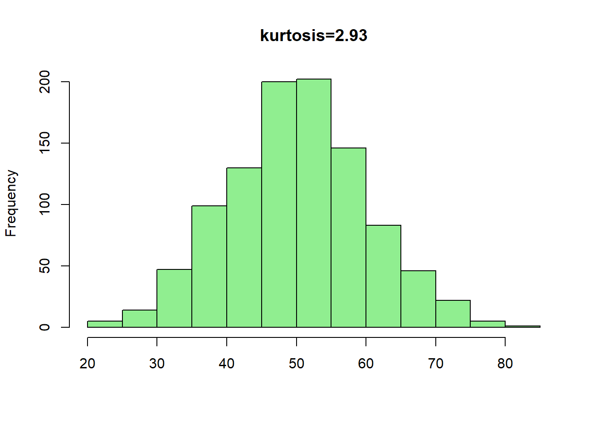
(b) Normal (mesokurtic) dağılım
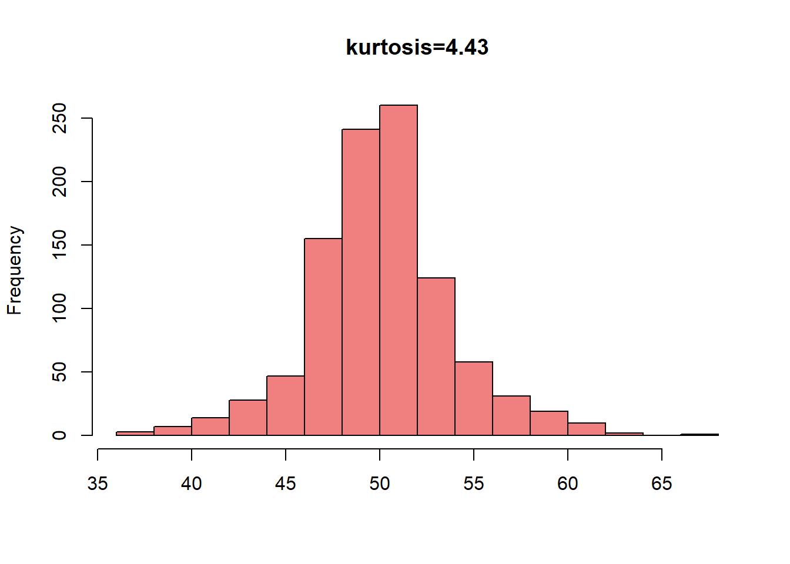
(c) Sivri (leptokurtic) dağılım
Şekil 12: Dağılımların basıklığı
Veri dağılımlarını tanımlarken önemli bir özellik de basıklıktır. Basıklık, dağılımın tepe noktasının sivriliği ya da basıklığı ile ilgilidir. Yani dağılımın uç değerlerde (kuyruklarda) yoğunlaşıp yoğunlaşmadığını gösterir. Basıklık, dağılımların uç noktalarındaki gözlem sayısına göre 3 temel kategoriye ayrılabilir:
Düz Dağılımlar (Platykurtic): Basık dağılımlar, merkezi bölge dışında çok fazla gözlem bulunmayan ve uç değerlerin sayısının az olduğu dağılımlardır. Bu tür dağılımlarda histogramın tepe noktası geniş ve düz olur (Şekil 12 (a)). Böyle dağılımlarda kurtosis (basıklık) katsayısı 3’ten küçüktür.
Normal Dağılımlar (Mesokurtic): Bir normal dağılım, basıklık açısından ortalama bir durumu gösterir. Dağılımın tepe noktası çok sivri ya da çok basık değildir. Normal dağılımın basıklık değeri 3 olarak tanımlıdır (Şekil 12 (b)).
Sivri Dağılımlar (Leptokurtic): Uç değerlerde daha fazla gözlem içeren, tepe noktası oldukça sivri olan dağılımlar ise leptokurtik olarak adlandırılır. Bu dağılımlarda uç bölgelerdeki veriler normal dağılıma göre daha yoğundur. Böyle dağılımlar için kurtosis katsayısı 3’ten büyüktür (Şekil 12 (c)).
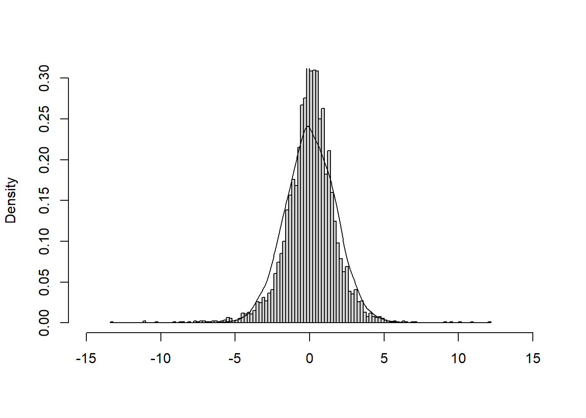
Şekil 13: BIST100 endeksinin günlük getirilerinin histogramı
Basıklık kavramı dağılımın kuyruklardaki ve merkezdeki davranışını incelemede önemlidir. Özellikle verinin uçlardaki davranışı, çeşitli analizler için önemli olabilir. Örneğin bazı finansal varlık getirilerinin dağılımı kalın kuyruklu (leptokurtik) olma eğilimindedir. Böyle bir dağılım, normal dağılıma göre daha sivri bir tepe ve daha kalın kuyruklara sahip olur. Şekil 13 BIST100 endeksinin günlük getirilerinin histogramını göstermektedir. Karşılaştırma amacıyla normal dağılımın yoğunluğu da grafiğe eklenmiştir. Bu getiriler için kurtosis değeri 8.07 olarak bulunmuştur. Normal dağılıma kıyasla, çoğu getiri değerinin ortalamaya yakın gerçekleştiğini, ancak uç olayların (aşırı kazanç veya kayıplar) normalden daha sık görüldüğünü söyleyebiliriz.
Keman grafiği
Keman çizimi, kutu-bıyık grafiğinin bir uzantısıdır ve veri dağılımını daha ayrıntılı bir şekilde görselleştirir. Bu grafik türü, son dönemde popülerleşmiştir ve verinin yoğunluk dağılımını da göstermektedir. Keman çiziminin bileşenleri şunlardır:
Kutu: Kutu-bıyık grafiğinde olduğu gibi Q1, Q2 (medyan) ve Q3’ü içerir.
Bıyıklar: Minimum ve maksimum değerleri gösterir.
Yoğunluk Eğrisi: Verinin dağılımını görselleştirir ve verinin yoğun olduğu bölgeleri daha geniş, seyrek olduğu bölgeleri ise daha dar gösterir.
Keman grafiği, verinin dağılımını ve yoğunluklarını detaylı bir şekilde anlamamıza yardımcı olur. Bu grafik türü, verinin merkezi eğilimi ve yayılımı, asimetri veya çarpıklık, aşırı değerler ve potansiyel veri anormallikleri hakkında bilgi verir.
Keman grafiği, kutu-bıyık grafiğine ek olarak verinin yoğunluk dağılımını da içerdiği için, veri analizi ve görselleştirme açısından daha zengin bilgiler sunar.
# Örnek veri setiveri <- x# Keman grafiğilibrary(ggplot2)df <-data.frame(veri = veri)ggplot(df, aes(x = veri, y ="")) +geom_violin(fill ="lightblue", color ="black") +geom_boxplot(width =0.3, fill ="gray") +theme_minimal() +labs(title ="Keman Grafiği", x ="Değerler", y ="")
Şekil 14: Keman grafiği
Şekil 14 örnek bir keman grafiğini göstermektedir. Bu grafiğin oluşturulmasında ggplot2() paketi kullanılmıştır. Kutu çiziminin yanı sıra yoğunluk fonksiyonunu şekli de görülmektedir. Buradan haraketle dağılımın yaklaşık olarak simetrik olduğunu söyleyebiliriz.
# Örnek veri setiset.seed(123)x1 <-rnorm(100, mean =20, sd =5)x2 <-rnorm(100, mean =40, sd =5)x <-c(x1, x2)# Keman grafiğilibrary(ggplot2)df2 <-data.frame(x = x)ggplot(df2, aes(x = x, y ="")) +geom_violin(fill ="lightblue", color ="black") +geom_boxplot(width =0.3, fill ="gray") +theme_minimal() +labs(title ="Keman Grafiği", x ="Değerler", y ="")
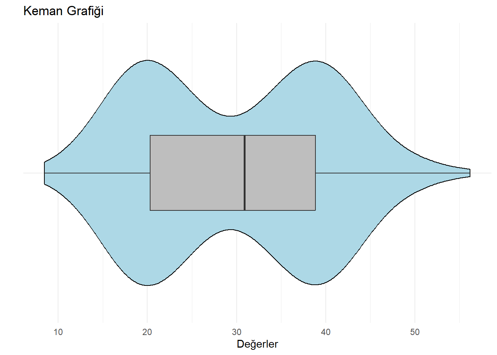
Şekil 15: Keman grafiği: iki tepeli dağılım
Kutu çiziminin bir eksikliği dağılımın simetrikliği dışında dağılımın şekli hakkında bilgi içermemesidir. Bazı dağılımlarda birden fazla tepe noktası olabilir. Keman çizimi özellikle bu durumda faydalı olabilir. Örnek olarak Şekil 15 iki tepeli bir yoğunluğa sahip olan bir değişkenin keman grafiğini göstermektedir.
İki Değişken Arasındaki İlişkinin Betimlenmesi
Şimdiye kadar bir değişkenin merkezi eğilimi, yayıklığı, ve dağılımının biçimine ilişkin çeşitli görsel ve sayısal araçları öğrendik. Bu bölümde iki değişken arasındaki ilişkinin nasıl görselleştirilebileceğini ve özetlenebileceğini öğreneceğiz.
Elimizde sürekli değerler alan iki değişkene ilişkin gözlemler olsun. Örneğin, 10 öğrencinin derse devam oranları ile notları aşağıdaki gibidir:
Bu veri kümesinde gözlem birimi öğrencilerdir. Her bir öğrenci için derse devam oranı ile not çiftini gözlemliyoruz. Birinci öğrencinin %80 devam oranı ile 100 üzerinden 75 başarıyla dersi tamamladığını görüyoruz. İkinci öğrenci %75 devam ve 78 puan, üçüncü öğrenci %70 devam ve 50 puan değerlerine sahiptir. Bu veri kümesini görsel olarak özetlemenin en pratik yolu X ve Y eksenlerinde bu değişkenlerin olduğu ve gözlem değerlerinin noktalarla ifade edildiği bir serpilme grafiği çizmektir:
plot(x = veri1$`Devam_oranı`, # x ekseniy = veri1$`Başarı`, # y eksenicol ="black", # renk = siyahpch =16, # sembol=içi dolu noktacex =1.2, # sembol büyüklüğümain ="", # başlıkylim=c(50,100), # y ekseninin sınırlarıxlim=c(50,100), # x ekseninin sınırlarıpanel.first =grid(), # grid çizgilerixlab ="Derse devam oranı, %", # x etiketiylab ="Başarı (100 puan üzerinden)"# y etiketi ) text(veri1$`Devam_oranı`, veri1$`Başarı`, labels = veri1$`Öğrenci`, # öğrenci no eklecex =0.9,pos =3)
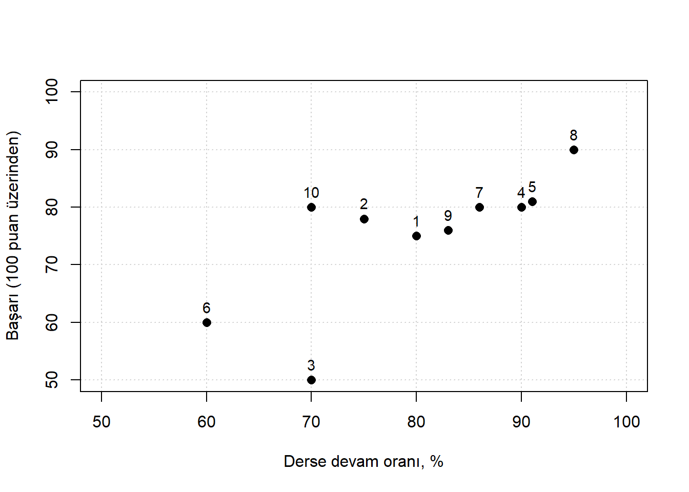
Şekil 16: Ders devam oranı ve başarı arasındaki serpilme çizimi
Şekil 16 öğrencilerin derse devam oranları ile başarı düzeyleri arasındaki ilişkinin serpilme çizimini göstermektedir. Gözlem çiftlerini betimleyen noktaların üzerindeki sayılar öğrencilerin numaralarıdır. Örneğin birinci öğrencinin %80 devam oranı ile 100 üzerinden 75 başarıyla dersi tamamladığını görüyoruz. İkinci öğrenci %75 devam ve 78 puan, üçüncü öğrenci %70 devam ve 50 puan değerlerine sahiptir. Bu grafikten hareketle devam oranı arttıkça başarının yükseldiğini söyleyebiliriz. İki değişken arasında aynı yönlü (pozitif) bir doğrusal ilişki olduğu görülmektedir.
Örnek 27 hane_ornek veri kümesinde yer alan aylik_gelir ve aylik_harcama değişkenlerinin serpilme çizimini oluşturunuz.
Çözüm
load("Data/hane_ornek.RData")plot(x = hane_ornek$aylik_gelir, y = hane_ornek$aylik_harcama, col ="black", panel.first =grid(),xlab ="Aylık hane geliri, TL", ylab ="Aylık hane harcaması, TL" )
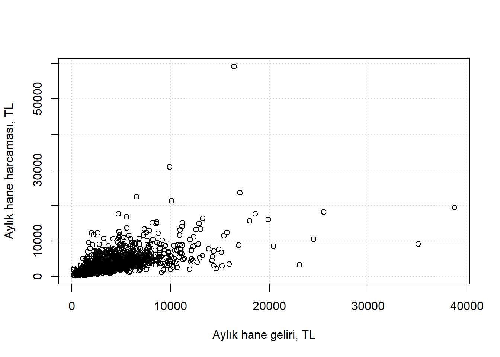
Şekil 17: Serpilme grafiği: aylık gelir ve harcama
Şekil 17 hanehalkı aylık ortalama gelir ve harcama değerlerinin serpilme grafiğini göstermektedir. Genel olarak gelir düzeyi ile harcama arasında pozitif bir ilişki olduğu söylenebilse de grafiğin sol alt kısmında, gelir ve harcamanın düşük olduğu alanlarda veri noktalarının yoğunlaştığını görülmektedir. Bu, daha fazla hanenin düşük gelir ve düşük harcama seviyelerinde olduğunu gösterir. Gerçekten de özet istatistiklerden
summary(hane_ornek$aylik_harcama)
Min. 1st Qu. Median Mean 3rd Qu. Max.
215 1708 2584 3261 3948 58994
summary(hane_ornek$aylik_gelir)
Min. 1st Qu. Median Mean 3rd Qu. Max.
184.7 1883.2 2863.1 3641.4 4529.7 38757.9
hanelerin %75’inin 4530 TL’den az gelire sahip oldukları görülebilir. Şekil 18 gelir düzeyi 5000 TL’den az olan alt küme için serpilme çizimini göstermektedir. Bu grafikte gelir ve harcamanın düşük olduğu bölgelerde veri noktalarının yoğunlaşması daha belirgin hale gelmiştir. Gelirine oranla harcaması çok yüksek hanelerin de olduğu görülmektedir.
hane_ornek_alt1 <-subset(hane_ornek, aylik_gelir<5000)plot(x = hane_ornek_alt1$aylik_gelir, y = hane_ornek_alt1$aylik_harcama, col ="black", panel.first =grid(),xlab ="Aylık hane geliri, TL", ylab ="Aylık hane harcaması, TL" )
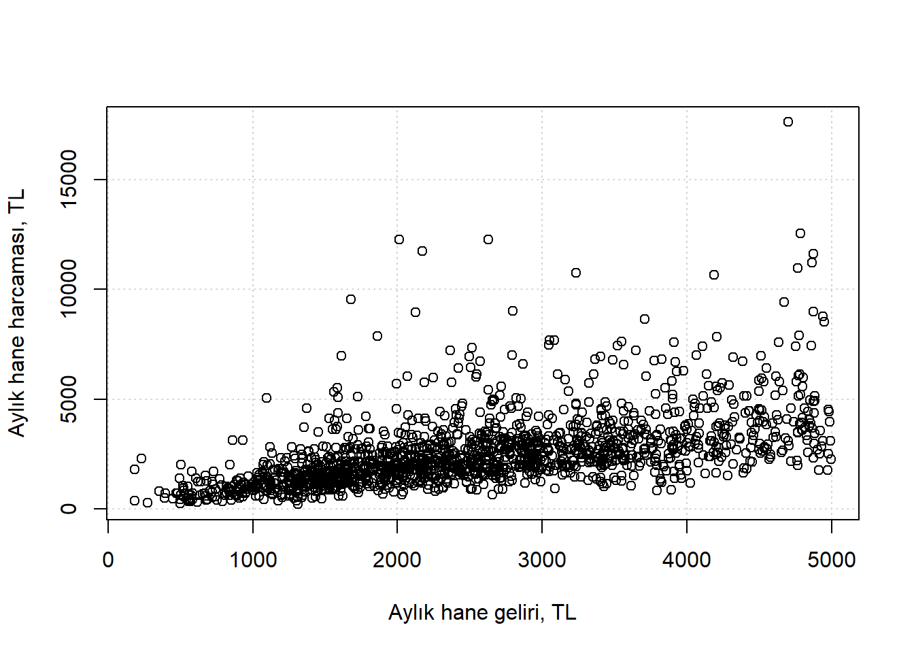
Şekil 18: Aylık geliri 5000 TL’den az olan hanelerde gelir ve harcama
Örnek 28 (Serpilme ve dağılım grafiği) Serpilme çizimine değişkenlerin dağılımlarını da eklemek mümkündür. Bunun için car paketinde yer alan scatterplot() fonksiyonu kullanılabilir:
Şekil 19 bu veri kümesinin serpilme çizimini x ve y değişkenlerinin kutu çizimleriyle birlikte vermektedir. Bu iki değişken arasında pozitif yönlü doğrusal bir ilişki olduğunu görüyoruz. Ayrıca, x’in merkezinin 10 civarında ve dağılımının simetrik olduğunu söyleyebiliriz. Benzer şekilde y’nin merkezi 30 civarında ve simetrik bir biçime sahiptir.
Serpilme çizimlerini inceleyerek değişkenler arasındaki ilişkinin yönü hakkında çıkarımda bulunabiliriz. Görsel araçlar, verilerin faydalı bir özetini sunar, ancak bu özetler sayısal özetlerle desteklenmelidir. İki sayısal değişken arasındaki ilişkiyi anlamak için kullanılan temel istatistiksel araçlar kovaryans ve korelasyondur. Kovaryans, iki değişkenin birlikte nasıl değiştiğini ölçer, pozitif veya negatif yönlü ilişkiler hakkında bilgi verir. Korelasyon ise, bu ilişkinin gücünü ve yönünü, ölçekten bağımsız olarak ifade eder. Bu sayede, değişkenler arasındaki ilişkiyi daha açık bir şekilde ortaya koyabiliriz.
Kovaryans
Kovaryans, iki değişkenin birlikte nasıl değiştiğini ölçen bir istatistiktir. İki değişkenin ortalamalarından sapmalarının çarpımlarının ortalaması olarak hesaplanır. Kovaryans pozitifse, değişkenler birlikte artma eğilimindedir; negatifse, bir değişken artarken diğeri azalma eğilimindedir.
Tanım 12 (Anakütle kovaryansı) İki değişken arasındaki anakütle kovaryansı \[
\sigma_{xy} \equiv \text{Cov}(X, Y) = \frac{1}{N} \sum_{i=1}^{N} (X_i - \mu_x)(Y_i - \mu_y)
\tag{15}\] olarak tanımlanır ve \(\sigma_{xy}\) ya da \(\mbox{Cov}(X, Y)\) ile gösterilir. Burada \(N\) anakütlenin (evrenin) boyutunu, \(\mu_x\) ve \(\mu_y\) bu değişkenlerin anakütle ortalamalarını ifade etmektedir. \(\mbox{Cov}(X, Y)\) pozitif, negatif, ya da 0 olabilir.
Tanım 13 (Örneklem kovaryansı) Bir anakütleden çekilmiş \(n\) boyutlu bir veri kümesinden hareketle örneklem kovaryansını tanımlayabiliriz: \[
\hat{\sigma}_{xy} \equiv \widehat{\text{Cov}(x, y)} = \frac{1}{n-1} \sum_{i=1}^{n} (x_i - \bar{x})(y_i - \bar{y})
\tag{16}\] Burada \(x_i\) ve \(y_i\), rassal değişkenlerin i. gözlemlerini, \(\bar{x}\) ve \(\bar{y}\) bu değişkenlerin örneklem ortalamalarını, ve \(n\) gözlem sayısını ifade etmektedir. Örneklem kovaryansı bilinmeyen anakütle kovaryansını tahmin etmekte kullanılabilir.
Tablo 4: Kovaryans hesaplama tablosu: derse devam ve başarı
Öğrenci
\(x\)
\(y\)
\(x - \bar{x}\)
\(y - \bar{y}\)
\((x - \bar{x}) \times (y - \bar{y})\)
1
80
75
0
0
0
2
75
78
-5
3
-15
3
70
50
-10
-25
250
4
90
80
10
5
50
5
91
81
11
6
66
6
60
60
-20
-15
300
7
86
80
6
5
30
8
95
90
15
15
225
9
83
76
3
1
3
10
70
80
-10
5
-50
Toplam
800
750
0
0
859
Tablo 4 derse devam oranı ile başarı düzeyi arasındaki kovaryansı hesaplamaktadır. Bu tabloda \(x\) derse devam oranını, \(y\) başarı düzeyini (not) göstermektedir. Tablonun altındaki toplamlardan hareketle devam oranının ortalamasının \(\bar{x}=80\), başarı düzeyinin ortalamasının \(\bar{y}=75\) olduğu görülebilir. Dördüncü ve beşinci sütunlarda ortalamadan farklar hesaplanmıştır. Son sütunda ise ortalamalardan farkların çarpımları yer almaktadır. Buradan hareketle bu iki değişken arasındaki örneklem kovaryansı kolayca hesaplanabilir:
R’da cov() fonksiyonu ile de bu hesaplama yapılabilir:
cov(veri1$Devam_oranı, veri1$Başarı)
[1] 95.44444
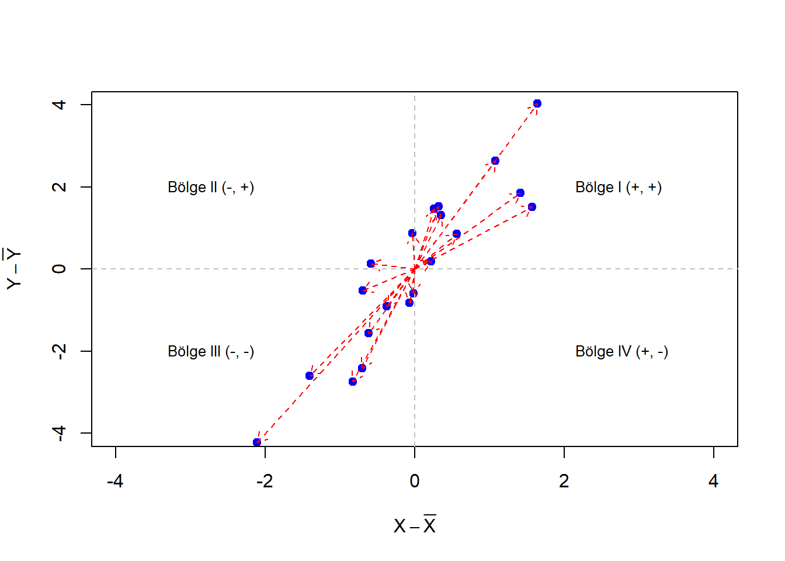
Şekil 20: Pozitif kovaryans
İki değişken arasındaki kovaryansın işareti ilişkinin yönü hakkında bilgi verir. Ancak büyüklüğü ölçü birimlerine bağlı olduğu için genellikle yorumlanmaz. Kovaryans formülünde yer alan ortalamalardan farkların çarpımının işareti ilişkinin yönünü belirler. Şekil 20 kovaryansın pozitif işaretli olduğu durumu görselleştirmektedir. Bu grafikte X ve Y eksenleri ortalamalardan farkları göstermektedir. Buna göre X ortalamanın üzerindeyken, yani ortalama farkı pozitifken Y de ortalamanın üzerinde olma eğilimindeyse (bölge 1) her iki fark pozitif işaretli ve çarpımları da pozitif işaretli olur. Diğer durumda X ortalamanın altındayken Y de ortalamanın altında olma eğilimindeyse her iki işaret negatif ve çarpımları pozitif olur. Sonuç olarak ortalamada bu değişkenlerin aynı yönde hareket ettikleri yani kovaryanslarının pozitif olduğu söylenebilir.
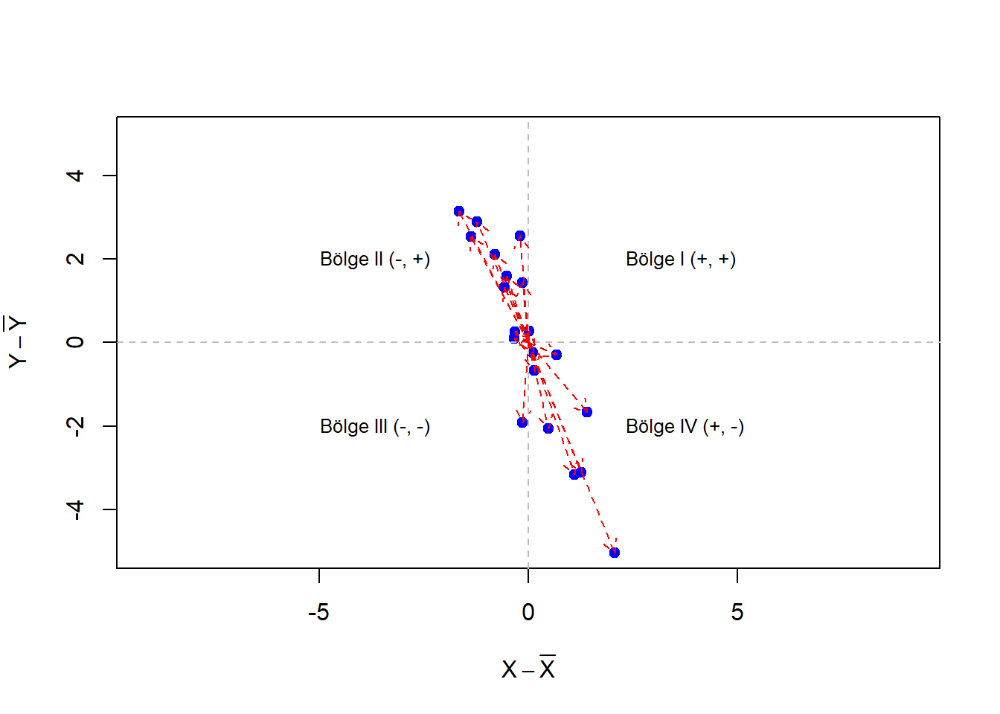
Şekil 21: Negatif kovaryans
Şekil 21 ise tersi durumu göstermektedir. X ortalamanın altındayken Y kendi ortalamasının üzerinde değerler alıyorsa (bölge II) çarpımın işareti negatif olacaktır. Diğer durumda X ortalamanın üzerindeyken Y ortalamanın altındaysa (bölge IV) çarpımın işareti negatif olacaktır. Tüm gözlem noktalarında eğilim bu şekildeyse kovaryans negatif işaretli olur. Merkezlere olan uzaklık büyüdükçe kovaryans değeri de mutlak olarak büyüyecektir.
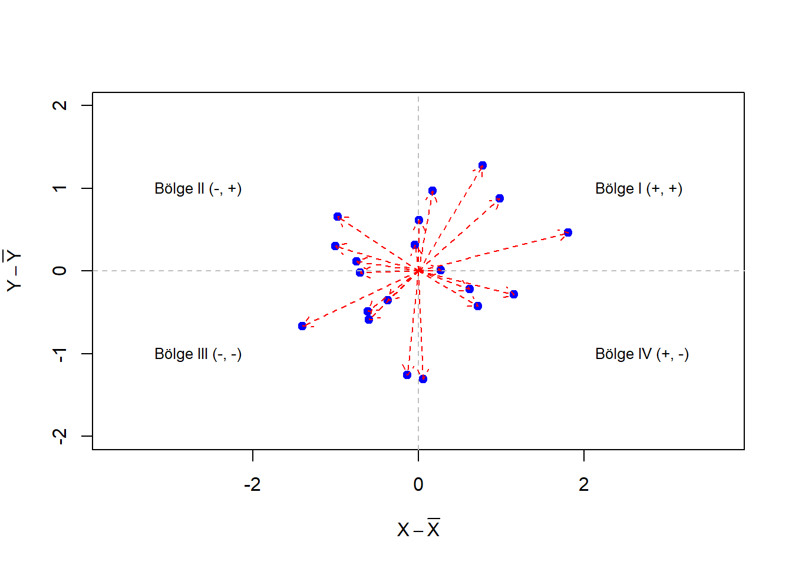
Şekil 22: Sıfır kovaryans
Şekil 22 X ile Y arasında ilişkinin olmadığı durumu göstermektedir. Bu durumda ortalamadan farkların orijin çevresinde tesadüfi bir şekilde dağıldığına dikkat ediniz.
Korelasyon
Korelasyon, iki değişken arasındaki lineer ilişkinin gücünü ve yönünü ölçen bir istatistiktir. Pearson korelasyon katsayısı en yaygın kullanılan korelasyon ölçüsüdür. Değerler -1 ile +1 arasında değişir. +1 mükemmel pozitif ilişkiyi, -1 mükemmel negatif ilişkiyi, 0 ise ilişkisizliği ifade eder.
Tanım 14 (Anakütle korelasyon katsayısı) Bir anakütle için iki değişken arasındaki korelasyon katsayısı \[
\rho_{xy} = \frac{\sigma_{xy}}{\sigma_x \sigma_y} \equiv \frac{\text{Cov}(X, Y)}{\sigma_x \sigma_y}
\tag{17}\] formülüyle hesaplanır. Burada \(\sigma_{xy}\) iki değişken arasındaki anakütle kovaryansını, \(\sigma_x\) ve \(\sigma_y\) bu değişkenlerin anakütle standart sapmalarını ifade etmektedir.
Tanım 15 (Örneklem korelasyon katsayısı) Örneklem korelasyon katsayısı aşağıdaki gibi tanımlanır: \[
r_{xy}\equiv \hat{\rho}_{xy} = \frac{\widehat{\text{Cov}(X, Y)}}{s_x s_y}
\] Burada \(\widehat{\text{Cov}(X, Y)}\) iki değişken arasındaki örneklem kovaryansını, \(s_x\) ve \(s_y\) bu değişkenlerin örneklem standart sapmalarını ifade etmektedir.
Örneklem korelasyon katsayısı \(r_{xy}\), iki sayısal değişken arasındaki doğrusal ilişkinin gücünü ve yönünü ölçen bir istatistiktir. Her zaman \(-1\) ile \(1\) arasında bir değer alır:
\(r = 1\): Mükemmel pozitif doğrusal ilişki. Bir değişken arttıkça diğer değişken de artar.
\(r = -1\): Mükemmel negatif doğrusal ilişki. Bir değişken arttıkça diğer değişken azalır.
\(r = 0\): Değişkenler arasında doğrusal bir ilişki yoktur.
Korelasyonun işareti kovaryansın işaretine bağlıdır. Pozitif korelasyon durumunda X ve Y değerleri arttıkça, veri noktaları ortalama etrafında yukarı doğru bir eğim gösterir ve farkların çarpımı pozitif olur. Negatif korelasyon durumunda ise X değeri arttıkça Y değerleri azalır; veri noktaları ortalama etrafında aşağı doğru bir eğim gösterir ve farkların çarpımı negatif olur. Sıfır korelasyon durumunda ise X ve Y arasında belirgin bir ilişki yoktur. Veri noktaları etrafında rastgele dağılır ve farkların çarpımının ortalaması sıfıra yakın olma eğilimindedir.
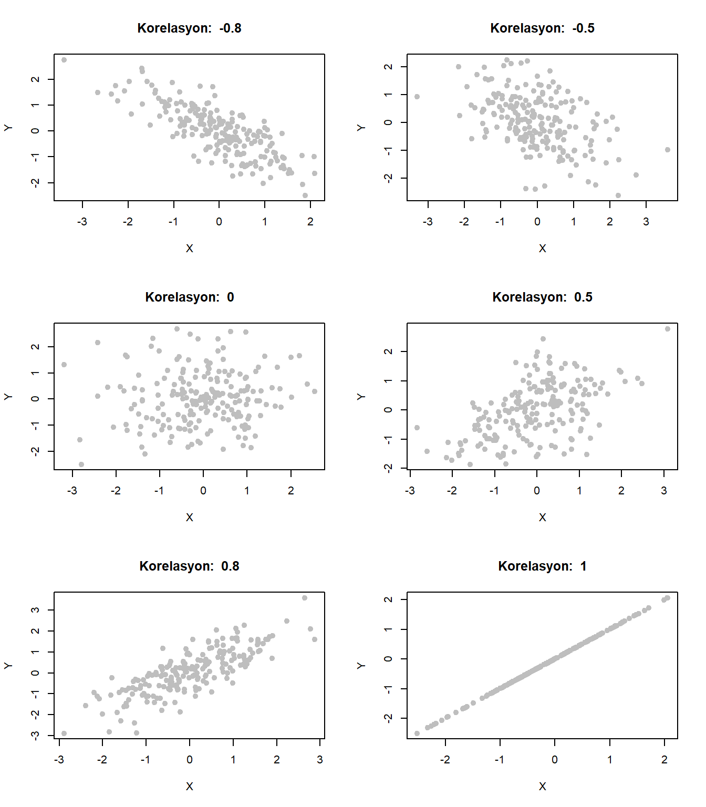
Şekil 23: X ile Y arasındaki korelasyon ve serpilme çizimleri
Korelasyon katsayısı \(1\)’e ya da \(-1\)’e yaklaştıkça doğrusal ilişkinin güçlendiğini, \(0\)’a yaklaştıkça zayıfladığını söyleyebiliriz. Şekil 23 farklı korelasyon değerlerine sahip değişken çiftlerinin serpilme çizimlerini göstermektedir. Korelasyon katsayısı azaldıkça veya arttıkça, veri noktalarının doğrusal bir çizgi etrafında daha sıkı bir şekilde kümelendiği görülebilir. Özellikle korelasyonun 0 olduğu grafikte, veri noktalarının belirgin bir doğrusal ilişki göstermediğine dikkat ediniz. Özetlersek, bu grafikte
Korelasyon \(-0.8\): Güçlü negatif ilişki. X değeri arttıkça Y değeri azalma eğilimindedir.
Korelasyon \(-0.5\): Orta düzeyde negatif ilişki. X değeri arttıkça Y değeri genel olarak azalmaktadır, ancak ilişki daha zayıftır.
Korelasyon \(0\): Hiçbir doğrusal ilişki yoktur. X ve Y değerleri arasında belirgin bir ilişki gözlemlenmemektedir.
Korelasyon \(0.5\): Orta düzeyde pozitif ilişki. X değeri arttıkça Y değeri genel olarak artmaktadır.
Korelasyon \(0.8\): Güçlü pozitif ilişki. X değeri arttıkça Y değeri artma eğilimindedir.
Korelasyon \(1\): Mükemmel pozitif doğrusal ilişki. X ve Y değerleri tamamen doğrusal bir ilişki içerisindedir; X değeri arttıkça Y değeri de sabit bir oranda artmaktadır.
Örnek 29 Tablo 4 verisinden hareketle derse devam oranı ile başarı notu arasındaki Pearson korelasyon katsayısını hesaplayınız.
Çözüm
Örneklem korelasyon katsayısını hesaplayabilmek için kovaryansı ve değişkenlerin standart sapmalarını bulmamız gerekir. Örneklem kovaryansını 95.4 olarak bulmuştuk. Derse devam oranının örneklem standart sapması 11.136 ve başarı oranının standart sapması 11.528 olarak bulunabilir. Böylece örneklem korelasyon katsayısı
\[
r_{xy} = \frac{\widehat{\text{Cov}(X, Y)}}{s_x s_y} = \frac{95.4}{(11.136)(11.528)} = 0.74
\] olur. cor() fonksiyonu ile
cor(veri1$Devam_oranı, veri1$Başarı)
[1] 0.7435248
Buradan hareketle derse devam oranı ile başarı düzeyi arasında güçlü pozitif bir ilişki olduğunu söyleyebiliriz.
Örnek 30 (Görselleştirmenin önemi, Anscombe veri kümesi)
Şekil 24 bu veri kümelerini göstermektedir. Her bir veri kümesi aynı ortalama ve varyansa ve benzer korelasyon katsayısına sahiptir. Ancak, görsel olarak incelendiğinde bu verilerin oldukça farklı dağılımlar ve ilişkiler sergilediği görülmektedir.
Veri 1: x1 ve y1 arasında pozitif yönde doğrusal bir ilişki bulunmaktadır.
Veri 2: x2 ve y2 arasında doğrusal olmayan (kuadratik) bir ilişki vardır.
veri 3: x3 ve y3 doğrusal bir ilişkiye sahip gibi görünmekle birlikte bir uç değer vardır.
Veri 4: x4, bir değer dışında, aynı değere sahiptir. Bu değer dışlanırsa (19) x4’ün varyansı sıfır olur.
Anscombe’nin Dörtlüsü, sadece korelasyon katsayısına dayanarak değişkenler arasındaki ilişkiyi anlamanın sınırlamalarını ortaya koymaktadır. Korelasyon katsayısı, iki değişken arasındaki doğrusal ilişkiyi ölçer. Ancak, bazı değişkenler doğrusal olmayan ilişkiler gösterebilir. Bu durumlarda, doğrusal olmayan ilişkileri tanımlamak ve analiz etmek için başka yöntemler kullanmak gerekebilir. Ayrıca, uç değerler korelasyon katsayısını önemli ölçüde etkileyebilir. Korelasyon katsayısı değişkenlerin dağılımı hakkında bilgi vermez. Aynı korelasyon katsayısına sahip olsalar da, yukarıda gösterildiği gibi, dağılımda önemli farklılıklar olabilir.
Korelasyon katsayısının geometrik anlamı
Korelasyon, iki vektör arasındaki açının kosinüsü olarak düşünülebilir. \(\mathbf{a}\) ve \(\mathbf{b}\) iki vektör olsun. Bu iki vektörün iç çarpımı \[
\mathbf{a} \cdot \mathbf{b} = \sum_{i=1}^{n} a_i b_i
\] ve vektör normları (ya da uzunlukları) \[
\| \mathbf{a} \| = \sqrt{\sum_{i=1}^{n} a_i^2}
\] ve \[
\| \mathbf{b} \| = \sqrt{\sum_{i=1}^{n} b_i^2}
\] olarak tanımlıdır. İki vektör arasındaki açının kosinüsü iç çarpım ve uzunluklar ile aşağıdaki gibi tanımlanabilir: \[
\cos(\theta) = \frac{\mathbf{a} \cdot \mathbf{b}}{\| \mathbf{a} \| \| \mathbf{b} \|}
\]\(0\leq \theta\leq \pi\) iki vektör arasındaki açıdır. Kosinüs fonksiyonunun tanımı gereği \(\cos(\theta)\) her zaman \(-1\) ile \(1\) arasında değerler alır.
\(x\) ve \(y\) gözlem değerlerini iki vektör olarak düşünülebilir. Ortalamadan farklar vektörlerini \(\mathbf{a} = (x_i - \bar{x})\) ve \(\mathbf{b} = (y_i - \bar{y})\) şeklinde tanımlarsak \[
r = \frac{\sum_{i=1}^{n} (x_i - \bar{x})(y_i - \bar{y})}{\sqrt{\sum_{i=1}^{n} (x_i - \bar{x})^2} \sqrt{\sum_{i=1}^{n} (y_i - \bar{y})^2}}\equiv \cos(\theta)
\] korelasyon katsayısının \(\cos(\theta)\) olduğunu görebiliriz.
\(r = 1\): İki değişken arasında mükemmel pozitif doğrusal ilişki vardır. Bu durumda, iki vektör aynı yöndedir ve açı \(\theta = 0\)’dır, dolayısıyla \(\cos(0) = 1\).
\(r = -1\): İki değişken arasında mükemmel negatif doğrusal ilişki vardır. Bu durumda, iki vektör zıt yöndedir ve açı \(\theta = \pi\) ya da \(180^\circ\)’dir. Dolayısıyla \(\cos(\pi) = -1\) olur.
\(r = 0\): İki değişken arasında doğrusal bir ilişki yoktur. Bu durumda, iki vektör arasındaki açı \(\theta = \frac{\pi}{2}\) ya da \(90^\circ\)’dir ve \(\cos\left(\frac{\pi}{2}\right) = 0\) olur.
Cauchy-Schwarz Eşitsizliği: İki vektör arasındaki nokta çarpımı, bu vektörlerin normlarının çarpımına eşit veya daha küçüktür: \[
\left| \sum_{i=1}^{n} (x_i - \bar{x})(y_i - \bar{y}) \right| \leq \sqrt{\sum_{i=1}^{n} (x_i - \bar{x})^2} \sqrt{\sum_{i=1}^{n} (y_i - \bar{y})^2}
\]
Burada, eşitlik durumu, iki değişken arasında tam doğrusal bir ilişki olduğunda (pozitif veya negatif) ortaya çıkar.
Çözümlü Alıştırmalar
Alıştırma 1 Bir sayısal vektörü girdi olarak alan ve medyanı hesaplayan bir R fonksiyonu yazınız.
Çözüm
# Medyanı hesaplayan fonksiyon# x = nümerik vektörmedyan <-function(x) { # Girdinin sayısal olup olmadığını kontrol etmeif (!is.numeric(x)) {stop("Girdi sayısal bir vektör olmalıdır.") } sirali_veriler <-sort(x) # sırala n <-length(sirali_veriler) # verinin boyutu if (n %%2==1) {# Tek sayıdaki veri seti için medyan <- sirali_veriler[(n+1)/2] } else {# Çift sayıdaki veri seti için ortadaki1 <- sirali_veriler[n/2] ortadaki2 <- sirali_veriler[(n/2)+1] medyan <- (ortadaki1 + ortadaki2)/2 }return(medyan)}medyan(gpa)
[1] 3
medyan(gpa2)
[1] 2.9
Burada (n %% 2) işlemi \(n\)’in 2’ye bölümünden kalanı verir. Çift sayılar için 0, tek sayılar için ise 1 değerini alır.
Alıştırma 2
Aşağıda verilen iki veri kümesini kullanarak ortalama, medyan, Q1, Q3, IQR ve aralıkları hesaplayın. İşlemleri önce kendiniz bir hesap makinesi yardımıyla yapınız. Daha sonra R programını kullanarak sonuçları karşılaştırınız.
Her iki veri kümesinin ortalaması aynıdır, medyan değerleri birbirine çok yakındır. Ancak ikinci veri setinin değişkenliği daha fazladır. Merkezi yayıklığı ölçen IQR ikinci veri kümesinde 8.75, birincisinde ise 2 olarak bulunmuştur.
Alıştırma 3 Rassal sayılar çekilerek bir veri kümesi oluşturulmuştur:
y x1 x2 grup
1 18.60331 4.327429 -0.56832525 C
2 18.44227 4.723787 0.20550697 C
3 24.42217 6.870450 -0.19735350 C
4 13.84834 5.084610 -0.27803408 A
5 15.55670 5.155145 -0.76129485 A
6 24.90853 7.058078 -0.03602218 C
Buna göre aşağıdaki soruları yanıtlayın.
Bu veri kümesinde yer alan x1, x2 ve y değişkenlerinin özet istatistiklerini hesaplayın ve yorumlayın.
y’nin özet istatistiklerini gruplara göre hesaplayın ve yorumlayın.
Gruplara göre kutu çizimlerini oluşturun ve yorumlayın.
Çözüm:
Değişkenlenlerin özet istatistikleri
summary(df)
y x1 x2 grup
Min. : 6.04 Min. :2.229 Min. :-1.64260 Length:100
1st Qu.:13.72 1st Qu.:4.407 1st Qu.:-0.64088 Class :character
Median :17.54 Median :5.074 Median :-0.18066 Mode :character
Mean :16.88 Mean :5.108 Mean :-0.08604
3rd Qu.:19.78 3rd Qu.:5.830 3rd Qu.: 0.37427
Max. :27.50 Max. :7.625 Max. : 2.59283
Ortalama ve medyan değerlerinden hareketle y ve x1’in yaklaşık olarak simetrik, x2’nin ise hafif sağa çarpık olduğunu söyleyebiliriz.
Gruplara göre y’nin betimsel istatistikleri:
summary(df$y[grup=="A"])
Min. 1st Qu. Median Mean 3rd Qu. Max.
6.04 8.90 11.14 11.83 13.85 22.14
summary(df$y[grup=="B"])
Min. 1st Qu. Median Mean 3rd Qu. Max.
7.794 16.054 18.067 17.719 19.538 24.500
summary(df$y[grup=="C"])
Min. 1st Qu. Median Mean 3rd Qu. Max.
15.59 18.75 20.31 21.17 23.58 27.50
Bu sonuçlara göre grup A en düşük ortalama ve medyana, grup C ise en yüksek ortalama ve medyana sahiptir. Grup B ikisinin arasındadır. Bunun yanı sıra birinci ve üçüncü kartillerin de benzer şekilde A’dan C’ye doğru arttığını görüyoruz.
Gruplara göre kutu çizimi:
boxplot(formula = y ~ grup,data = df, at =c(0, 0.5, 1.0), ylim=c(0,30),horizontal =FALSE, frame.plot =FALSE, boxwex = .3, # daha dar kutuboxfill ="gray80",whiskcol ="gray70", boxcol ="grey70",outcol ="grey70", whisklty =1,outpch =20, # uç değerler nokta outcex =0.8, # uç değer boyutu medlwd =1.0)
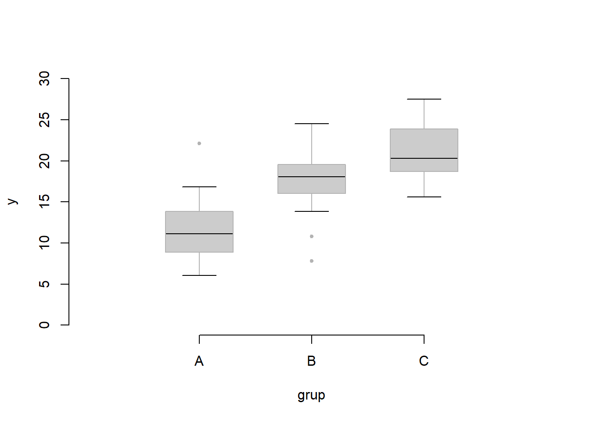
Önceki kısımda belirttiğimiz gibi y’nin medyanı grup C’de en yüksek değeri almaktadır. A grubunda y yaklaşık olarak simetrik dağılırken, B grubunda hafif sola, C grubunda ise sağa çarpıktır.
Bu grafiği plot() fonksiyonu ile de çizebiliriz:
plot(as.factor(df$grup), df$y)
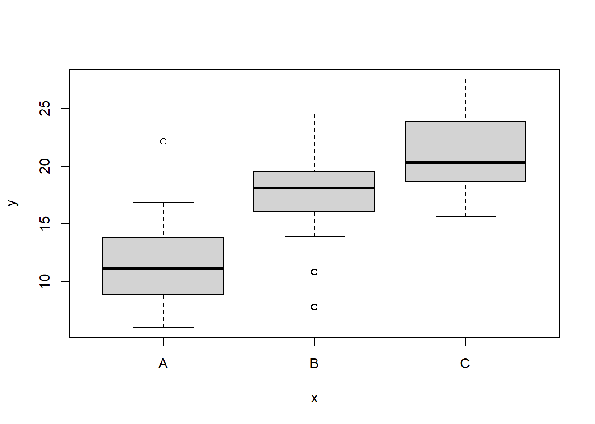
Alıştırma 4 mtcars veri kümesinde yer alan araç ağırlığı (wt) ve yakıt verimliliği (mpg, galon başına mil) değişkenlerinin kovaryansını ve korelasyon katsayısını hesaplayınız. Serpilme grafiğini oluşturarak yorumlayınız.
Çözüm:
# mtcars veri setini yükleyelimdata(mtcars)# Kovaryans ve korelasyon hesaplamacov_value <-cov(mtcars$mpg, mtcars$wt)cor_value <-cor(mtcars$mpg, mtcars$wt)cov_value
[1] -5.116685
cor_value
[1] -0.8676594
# Dağılma diyagramı oluşturma ve kovaryans ve korelasyon değerlerini eklemeplot(mtcars$wt, mtcars$mpg, main=paste("Serpilme grafiği: Araç Ağırlığı ve Yakıt Verimliliği\n","Kovaryans: ", round(cov_value, 2), ", Korelasyon: ", round(cor_value, 2)),xlab="Ağırlık (1000 lbs)", ylab="Mil/Gallon (mpg)",pch=19)
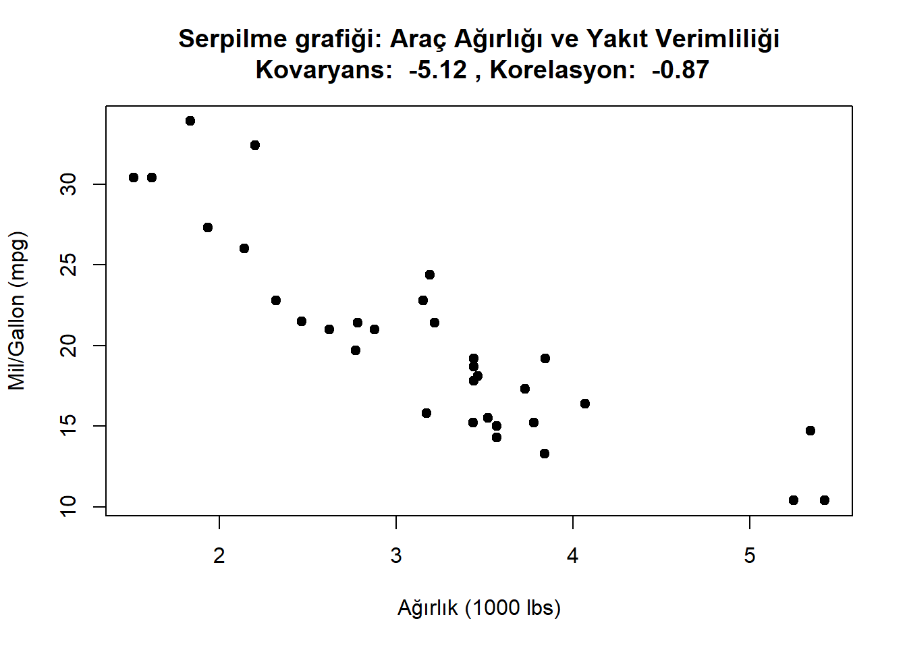
Bu sonuçlara göre otomobilin ağırlığı ile yakıt verimliliği arasında negatif yönlü güçlü bir ilişki olduğunu söyleyebiliriz (korelasyon katsayısı \(-0.87\) bulundu). Aracın ağırlığı arttıkça yakıt verimliliği, yani birim yakıt (galon) başına gidilen yol (mil cinsinden) azalmaktadır. Buradan hareketle büyük otomobillerin yakıt tüketimi bakımından daha verimsiz olduğu söylenebilir.
Alıştırma 5 mutluluk veri kümesinde yer alan saglik_tatmin (sağlık tatmin düzeyi) ve mutluluk (mutluluk düzeyi) değişkenlerinin serpilme grafiğini çiziniz ve korelasyon katsayısını hesaplayınız.
Çözüm:
load("Data/mutluluk.rda")
cor(mutluluk$saglik_tatmin, mutluluk$mutluluk)
[1] 0.5918097
plot(mutluluk$saglik_tatmin, mutluluk$mutluluk, col =rgb(0,100,0,50, maxColorValue =255), # renk kontrolüpch =16, # nokta şeklimain ="Serpilme çizimi", # başlıkxlab ="Sağlık tatmin düzeyi", ylab ="Mutluluk endeksi" )
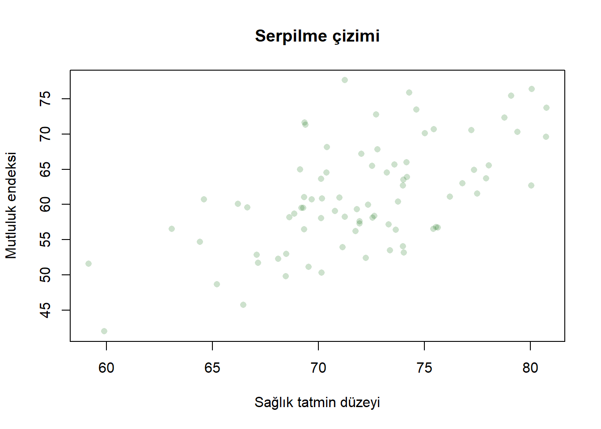
Bu sonuçlara göre sağlık tatmin düzeyi ile mutluluk arasında orta düzeyde pozitif bir doğrusal ilişki vardır (korelasyon yaklaşık 0.6). Serpilme çiziminden de görüldüğü gibi sağlık tatmin düzeyi arttıkça mutluluk düzeyi de artmaktadır.
İl düzeyinde mutluluk düzeyi, o ilde yaşayan bireylerin ortalama sağlık tatminleri, ve sosyal hayat tatmin düzeyleriyle de ilişkilidir. Bunu göstermek için aşağıdaki gibi korelasyon matrisi oluşturabiliriz:
Bu matrisin hücreleri o satır ve sütundaki değişkenler arasındaki korelasyon katsayısını göstermektedir (ana köşegen her zaman 1 olur). Buna göre sosyal hayat tatmin düzeyi ile mutluluk endeksi arasındak korelasyon katsayısı 0.68’dir. Bu değişkenler arasında serpilme çizimlerini de plot() fonksiyonu ile oluşturabiliriz:
plot(mutluluk[,c(15,41,42)])
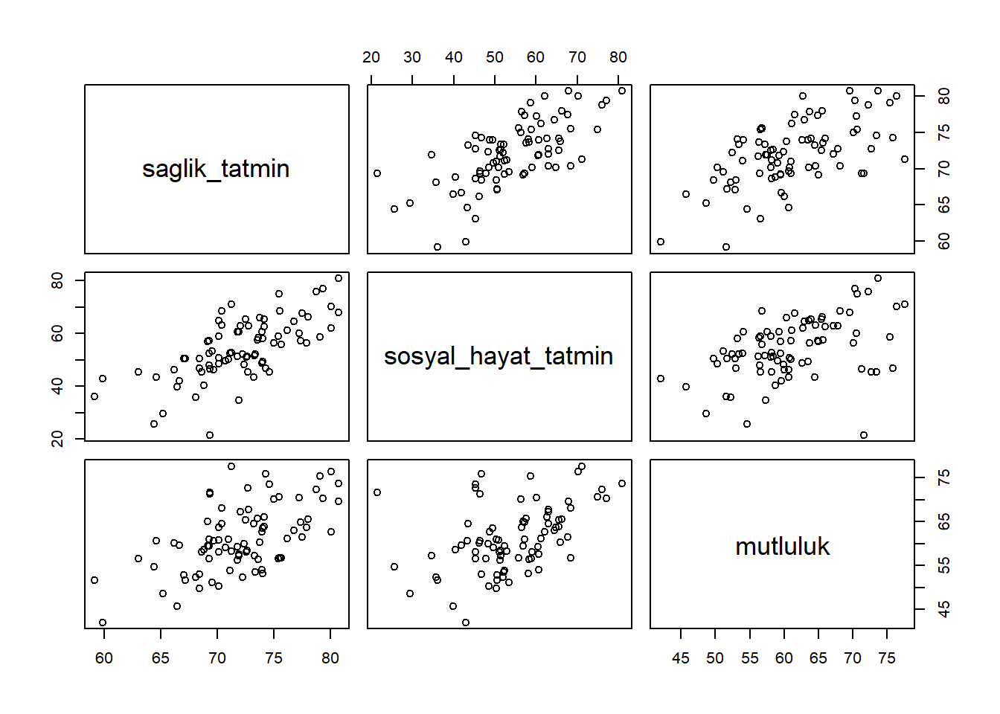
Alıştırma 6 Bu alıştırmada verileri görselleştirmenin önemini vurgulamak amacıyla geliştirilmiş datasauRus veri kümesini inceleyeceğiz. Önce veri kümesini yükleyin:
Her bir çift için korelasyon katsayısı yaklaşık -0.06’dır. Neredeyse sıfır korelasyon değeri, değişkenler arasında hiç bir ilişki olmadığı anlamına gelmez. Serpilme çizimlerinden de görüldüğü gibi ilişkilerin şekli belirgin biçimde farklıdır. Anscombe Dörtlüsünde olduğu gibi, Datasaraus veri kümesi de korelasyon katsayısının tek başına verilerin tüm özelliklerini yansıtmakta yetersiz kalabileceğini göstermektedir.
Problemler
Problem 1 Aşağıdaki soruları yanıtlayın.
Merkezi eğilim ölçülerini sıralayın ve kısaca açıklayın. Hangi durumda medyan tercih edilir?
Hangi tür verileri için geometrik ortalama uygun olabilir?
Bir firmanın satışları 4 yıllık bir dönemde %40 büyümüştür. Yıllık ortalama büyüme yüzde kaçtır?
“Aralık, uç değerlerden etkilenmeyen bir değişkenlik ölçüsüdür” Bu ifadeye katılır mısınız? Kısaca açıklayın.
Değişkenlik ölçüleri nelerdir? Kısaca açıklayın.
Problem 2 Büyük bir toplulukta IQ skorları ortalaması 100 standart sapması 10 olan bir dağılıma uymaktadır.
Çan biçimli bir dağılım varsayımı altında, gözlemlerin %95’inin içinde yer alacağı bir aralık oluşturun.
Dağılımın şeklinin bilinmediğini düşünelim. Gözlemlerin yüzde kaçı 1 ve 2 standart sapma içinde yer alır?
Problem 3 Aşağıdaki tablonun sütunlarındaki her değişken için ortalama, medyan, mod, standart sapma, IQR, ve varyasyon katsayısını bulun.
X
Y
Z
A
B
C
D
0
5
-3
24
5
124
55
1
3
-2
30
5
85
64
0
0
-1
12
5
102
72
0
6
0
7
5
156
75
1
10
1
15
3
133
78
1
1
2
28
1
115
85
Problem 4 Aşağıdaki veri kümesini düşünelim: \[
(51, 42, 51, 56, 54, 58, 49, 60, 52, 55, 52, 51, 49, 42, 44, 54, 50, 46, 53, 50, 47, 52, 49, 50, 49)
\] Bilgisayar kullanmadan:
Dal-ve-yaprak çizimini oluşturun.
5-sayı özet istatistiklerini hesaplayın.
Kutu grafiğini çizin.
4 ya da 5 sınıftan oluşan frekans tablosunu hazırlayın ve histogramını çizin.
Problem 5 Aşağıdaki ifadelerin doğru/yanlış olup olmadıklarını belirtin ve kısaca açıklayın.
Medyan ortalamaya göre uç değerlere daha az duyarlıdır.
IQR aralığa kıyasla uç değerlere daha az duyarlıdır.
Kovaryans her zaman -1 ile 1 arasında değerler alır.
Korelasyon katsayısının 0.9 olması iki değişken güçlü pozitif doğrusal ilişki olduğu anlamına gelir.
Kutu grafiği dağılımın modalliği (tepe sayısı) hakkında bilgi vermez.
Problem 6 Çok sayıda öğrencinin katıldığı bir sınavın sonucuna ilişkin aşağıdaki yorumlar yapılıyor:
Öğrencilerin %70’i ortalamadan yüksek not almış.
Öğrencilerin %70’i medyandan yüksek not almış.
Öğrencilerin %60’ı medyandan düşük not almış.
Bu ifadelerden hangileri kesin olarak yanlıştır? Kısaca açıklayınız.
Problem 7 Ortalaması 10 standart sapması 2 olan 5 sayı oluşturun (bilgisayar kullanmayın).
Problem 8 gapminder verilerini kullanarak aşağıdaki soruları yanıtlayınız:
Doğumdaki yaşam beklentisi, lifeExp, değişkeninin 1952 yılı için histogramını çizin.
Aynı değişkenin 2007 yılındaki histogramını da çizin ve karşılaştırın.
Problem 9 hane_ornek.RData verilerini kullanarak aşağıdaki soruları yanıtlayınız:
sigara hanede sigara içen varsa 1, yoksa 2 değerini alan bir kategorik değişkendir. Bunu kullanarak bir faktör değişkeni oluşturun. Hanelerin yüzde kaçında sigara içilmektedir?
Sigara içilen ve içilmeyen gruplar için ayrı ayrı özet istatistikleri oluşturun ve kutu grafiklerini çizin. Ortalama ve medyanı kullanarak bu iki grup arasında önemli farklar olup olmadığını tartışın.
ozel_sigorta değişkeni hanehalkının özel sigortası varsa 1 yoksa 2 değerini almaktadır. Hanelerin ne kadarının özel sigortası vardır?
Özel sigortası olan ve olmayan hanelerde aylık gelir ve harcamanın özet istatistiklerini oluşturun, histogramlarını çizin ve yorumlayın.
Problem 10 mutluluk.RData verilerini kullanarak aşağıdaki soruları yanıtlayınız:
ort_gun_kazanc o ilde yaşayan bireylerin ortalama günlük kazançlarını göstermektedir. Bu değişkenin histogramını ve kutu grafiğini çizin. Özet istatistikleri hesaplayın ve grafiklerle birlikte yorumlayın.
mutluluk endeksi ile ort_gun_kazanc arasındaki korelasyon katsayısını bulun. Serpilme diagramını çizin ve yorumlayın.
Bu iki değişkenin varyasyon katsayılarını (CV) hesaplayın ve yorumlayın.
Problem 11 body.RData vücut ölçümleri veri kümesini kullanarak aşağıdaki soruları yanıtlayınız:
height (boy) değişkeninin kadın ve erkekler için ayrı ayrı kutu çizimlerini oluşturun ve özet istatistiklerle birlikte yorumlayın.
height ve weight değişkenlerinin serpilme çizimlerini oluşturun. Cinsiyete göre noktaları ayrıştırın (renk ya da geometrik şekil kullanılabilir, erkekler için kırmızı, kadınlar için mavi vb.).